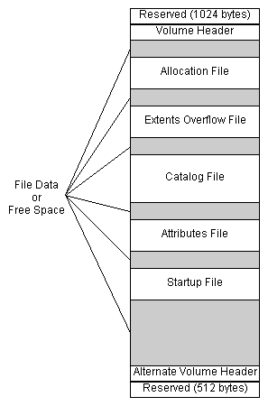
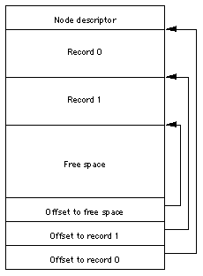
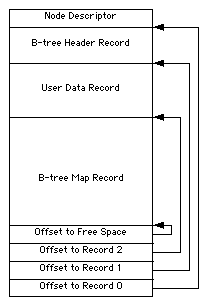
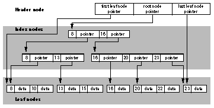
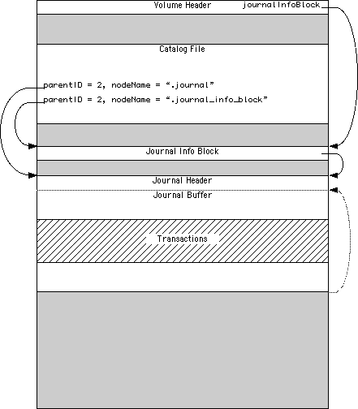
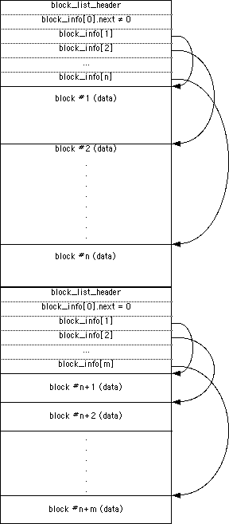

|
|
本技术文档用于描述HFS+分区。它并没有描述任何HFS+编程接口。
此文档面向在文件系统抽象层以下，直接操作HFS+的底层开发人员。
包括数据恢复或移植HFS+到其它平台的开发人员。
此文档假设你已经具备HFS分区的基本知识，相关内容在
Inside
Macintosh: Files.
[Mar 05, 2004]
译者：annidy 2013年3月8日
|
HFS+基础
HFS+是Mac OS的一种分区格式。HFS+第一次出现在 Mac
OS 8.1。 HFS+的结构类似于HFS, 有少量的改变。下表总结了主要的不同点。
表 1 HFS 与 HFS+ 比较
|
特性
|
HFS
|
HFS+
|
优势/注释
|
|
显示名称
|
Mac OS Standard
|
Mac OS Extended
|
|
|
记录分配blocks的长度
|
16 bits
|
32 bits
|
减少了大分区中可用空间，增加分区上的最大文件数。
|
|
文件名长度
|
31 字节
|
255 字节
|
提高跨平台交互性，有利于用户使用。
|
|
文件名编码
|
MacRoman
|
Unicode
|
国际化支持更好
|
|
文件/目录的属性
|
支持固定长度的属性 (FileInfo and
ExtendedFileInfo)
|
支持未来 meta-data 扩展
|
未来可能会使用一些属性增加Finder的体验
|
|
OS启动支持
|
系统目录 ID
|
新增支持专用启动文件
|
可用于非Mac OS系统从HFS+启动
|
|
catalog node 大小
|
512 bytes
|
4 KB
|
修改以适应其它变化。 (更长的文件名，更大的 catalog records (由于fields增多或变大)).
|
|
最大文件大小
|
231 bytes
|
263 bytes
|
有利于多媒体文件存放 |
新增的功能并不影响编程和系统调用。Mac OS 小于 9.0 的版本没有提供有关HFS+特殊功能的接口。
总体来说，设计HFS+文件系统的目的是：
- 有效地使用磁盘空间
- 国际化的文件名
- 支持未来的一些特性
- 可用于非Mac OS系统从HFS+启动
下面的章节将会探讨HFS+是如何实现上述目标的。
高效的使用磁盘空间
HFS将磁盘分为大小相等的allocation blocks。用16位的来标识每个
allocation blocks。所以最多有216 (65,536)个allocation blocks
在一个卷上。每个allocation block通常是512的倍数并且总数小于
65,536 (例如，用卷大小除65,535, 再向上取整到512的倍数)。
每个非空的fork必须占用整数个allocation blocks。当分区很大时，
浪费的空间将递增。
HFS+使用32位来标识allocation
blocks。总共有2 32 (4,294,967,296)
allocation blocks。更多的allocation blocks意味着每个block更小，
特别是当卷超过1G时，平均浪费的空间会减少许多（allocation block的
余数是不被使用的）。同时意味着更多的文件，因为剩余空间可以很好的分配到
大量文件中。特别是如果有很多小文件。
文件名国际化支持更好
HFS使用31字节的字符串储存文件名。并没有任何信息用于指示其字符集。
文件名的比较和排序默认使用Roman字符集。对使用其它国家（比如日本）很不友好。
更糟的是，即使是Roman字符集，此算法仍然有问题。Finder和其它程序则根据当前系统来选择字符集。
|
提示:
使用非Roman字符集问题是，HFS的文件名比较通常是大小写不敏感的。
这个算法在非Roman会奇怪的失败，导致HFS认为它们名字相同，尽管事实上不相同。
|
HFS+ 使用255个Unicode字符储存文件名。长文件名对于计算机
生成的文件名非常适用（比如Java的类名）
HFS的catalog的B树中，每个节点是512字节。HFS+一个文件名就可能达到512字节（包括文件名长度）。
由于B树的索引节点至少有2个key（加上指针和节点描述），所以HFS+的catalog的节点大小更大，
通常是4k。
HFS的catalog的B树中，索引节点的key占用固定大小，即最大的key大小。
在HFS+，key的大小是可变的。这样浪费的空间就少了，同等地有更多分支在树中（
找到一个记录访问的节点更少）
未来支持Named Forks
在HFS卷上的文件有2种forks: data fork 和 resource fork，
两者都可能是空。文件和目录还包含一些额外信息（catalog信息或元信息metadata），
比如修改日期或 Finder 信息。
苹果软件团队或第三方开发人员常常需要针对特殊文件存储特别的信息。
某些情况（比如文件自定义图标），data或resource fork适用。
但另外（比如自定义目录图标，文件共享访问权限），使用data或resource fork就满足不了了。
很多产品都有一些特殊方案以解决与特定文件或目录相关数据A保存。
由于它们并不由文件系统管理，所以可能与文件和目录结构不一致。
HFS+有一个attribute文件，有单独的B树用于储存目录和文件。由于它是卷的一部分，
所以即使文件或目录移动或重命名后依然有效，删除后相关信息也被删除。
attribut文件的 records没有完全定义，但它的目的为任何文件和目录，提供任意数量的、以Unicode名字为key的forks。
|
提示:
由于attributes文件还未完全定义，目前还不能在删除文件或目录时删除named fork。
将来删除named forks可能会检查是否有孤立named forks，并在下次mounted时一并删除。卷头的lastMountedVersion 字段可以用来检查是否需要该操作。
无论如何，程序应该删除其named forks，而非让它孤立。
|
轻松设置启动分区
HFS+定义了一个单独的 startup file，
它的非结构fork使得在启动时非常方便地就可以访问。
volume header 中定义了文件的位置和大小。
由于一些系统的ROM并不支持HFS或HFS+系统。在许多方面，启动文件可以看做是HFS的引导分区，
而且更大，更容易调整（译注：例如NTFS的启动扇区）。
返回顶部
核心内容
HFS+使用一些互相关联的结构来组织卷上的数据。这些结构包括：
每个结构都有自己的存放区域。本节的目的就是介绍分区结构，各个重要结构之间的联系，和HFS+用到的一些重要数据类型。
术语
HFS+ 规定了一个 卷 是如何存入于磁盘上。磁盘上最小存储单位是 扇区。它是每次读写磁盘的最小单位。对于硬盘来说，扇区的大小通常是512或2048。
大部分HFS+中的数据结构都不依赖于扇区大小, 除了
journal。因为journal需要根据扇区编号定位，扇区大小储存在journal header的jhdr_size 域中（如果卷存在journal).
HFS+ 分配的最小单位是 allocation
blocks；它的大小是2的幂次，最小512。在分区格式化时就决定了，并且在使用中很难改变。每个location
blocks 由 32-bit 的allocation block
number来区分，所以最多可以有 232 个
allocation blocks 在一个卷上。目前allocation blocks被优化设置为4K。
|
提示:
为了提高性能，allocation block的大小最好是扇区的整数倍。
如果卷里面包含了 HFS wrapper，
则wrapper的allocation block的大小和位置也应该是扇区的整数倍。
|
所有卷里的结构，包括卷头都是一个或多个allocation blocks的一部分 (可变卷头除外，
见下). 这一点与HFS不同，它有很多结构(boot blocks, master
directory block, and bitmap) 不属于任何一个allocation block.
为了让文件尽可能地相邻，避免出现碎片，
磁盘通常将文件分为几个allocation block组or clumps。
clump的大小问题allocation block的整数倍。默认组大小在volume header指定。
|
重要:
真实的文件分配算法在本文档中没有叙述。
算法的实现也没有要求一定要使用clump。
基本上它只是让volume header提供一个空间而已。
|
|
提示:
Mac OS目前针对非临近的文件分配是直接它找到的下一个空闲block。
并连续分配最大的clump整数倍空间。起辅助防止碎片的作用。
|
每个HFS+ 卷都是有一个 volume header.
volume header 包含信息很杂，包括此卷的创建时间，文件数量，重要结构的位置等。
volume header 总是在位于距卷开始1024字节处。
alternate volume header 是volume header的一个备份，在距卷尾1024字节处。卷头的1024字节
(volume header之前)，和最后512字节 (alternate volume header之后)是保留区间.
所有包含了volume header, alternate volume header, 和上面保留区间所占用的区域都在 allocation file
中标记为占用。
HFS+的卷包含5个 特殊文件，
它们包含一些重要的结构以支持访问：目录，用户文件，和属性。
这几个特殊文件是 catalog file, extents overflow file, allocation file, attributes
file 和 startup file。特殊文件只有1个 data fork 并保存在 volume header 里。
catalog file 描述了目录和文件之间的结构。catalog file 包含文件和目录的
catalog information，并以B-tree方式存储以方便搜索。
catalog file 存储了文件和目录的名字，大小为255 Unicode 字符，细节
如下.
|
提示:
The B-Trees section contains
an in-depth description of the B-trees used by HFS+. |
attributes file 则是存储了目录和文件的特殊信息。它同样
也是以B-tree方式组织结构的。未来它也会把一些特殊信息存储在外部fork中。
（它与catalog file 存储文件的 data 和 resource forks 类似）
HFS+ 把许多 allocation blocks 组织为entent, 一个
extent 就是一段连续的 allocation blocks，标记有：
起始 allocation block number 和 allocation blocks 数量。
许多entent组成为一个链表，这个链表就称为fork。
对于用户文件，开始8个extent存储在catalog file里，其余的则存储在
extents overflow file，它同样也是以B-tree方式组织的。
extents overflow file 甚至也存储了它自己的extent。对于启动文件，无疑会
加重启动代码的难度，所以启动文件是分开存放的。它没有额外的extent在extents overflow file.
allocation file 用于标记那些allocation block 是空闲的。
这部分的作用类似于HFS的volume bitmap。
startup file is another special file which
facilitates booting of non-Mac OS computers from HFS+
volumes.
最后，还有一个 bad block file 来防止使用坏道。只是它
通常只是依附于 extents overflow file 中。参考
Bad Block File 以获取更多细节。
主要结构
HFS+的卷大致由7部分组成：
- user file forks,
- the allocation file (bitmap),
- the catalog file,
- the extents overflow file,
- the attributes file,
- the startup file, and
- unused space.
图1 描述了它们在卷中的情况

图 1. HFS+ 卷的组织。
volume header 在固定的位置。而几个特殊文件可能出现在
volume header 和 alternate volume header 之间的任一
block。 它们之间的顺序也没有任何规定。
HFS+卷上的信息独立储存于allocation blocks（alternate volume header
是例外，
参见）。allocation blocks是为了方便管理而人为划分的一组空间。
大小是2个幂，最小512。allocation block的大小在分区初始化即已确定，并且以后不可更改。
|
提示:
allocation block的大小是经典的速度与空间的平衡。
增加每个block的大小能减少每个文件分配的个数，加速访问。
每次磁盘I/O更大，负载减小。减少block的大小可降低每个文件浪费的空间，
从而更充分地利用磁盘。
|
|
警告:
尽管在HFS+上使用小于4K的block是合法的，但是DTS还是建议使用最小4K。
太小会降低在4KB为簇的系统上访问性能，比如Mac OS X Server。
|
基本数据类型
本节描述了一些HFS+卷里的基础数据类型。所有数据结构都用C语言定义。
如果编译器会自动对齐结构，请加上一些标记以禁止。
|
重要:
HFS+的格式主要从HFS发展而来。当定义新格式时，会去除原来未使用的域（主要是MFS遗留域），
并重新安排其空间，使得总大小不变，而且每个域都已对齐（使用PowerPC的对齐方式）。
|
保留和补齐空间
本说明中许多域都是保留的，它有特殊的意义，即：
- 当创建一个结构有保留域时，应该把它设置为0。
- 当读一个结构时，应当忽略保留域的内容。
- 当改变一个结构时，不应该修改保留域中的内容。
这种定义方式可以有效地向后兼容。
补齐域和保留域类似。不同点在于，前者是故意设计预留，后者是实现需要。
整数类型
所有整数都由下面基础类型构成：UInt8, SInt8,
UInt16, SInt16,
UInt32, SInt32,
UInt64, 和 SInt64。
它们表示是无符号或有符号的8-bit, 16-bit, 32-bit, 和 64-bit 数字。
所有多字节整数都以大端对齐格式存储。 即储存的方式是从最高的有效位到最低的有效位，
字节从0到n-1 (比如类型UIntn 和 SIntn),
第0位是最底的有效位。
HFS+ 名字
文件和目录的名字为固定255个16-bit的
Unicode 字符。定义为HFSUniStr255.
struct HFSUniStr255 {
UInt16 length;
UniChar unicode[255];
};
typedef struct HFSUniStr255 HFSUniStr255;
typedef const HFSUniStr255 *ConstHFSUniStr255Param;
|
UniChar 是 UInt16 长度，
定义的字符集在 The Unicode Standard, Version 2.0
[Unicode, Inc. ISBN 0-201-48345-9] 中
HFS+的字符串是未经压缩并按实际顺序存储的。字符串比较区分大小写，
但包含Unicode字符的不适用，忽略之。更多细节参见Unicode
细微之处。
一种HFS+的变种，称为HFSX，
允许更为新式的大小写敏感比较。也是未经压缩并按实际顺序存储，但Unicode字符参与比较。
文件编码
传统的Mac OS编程接口传入的文件名是Pascal strings(嵌在FSSpec中的StringPtr或Str63）。它里面的字符不是Unicode的；
而是取决于系统当前的语言和默认的编码。相同的序列可表示不同的Unicode字符，
许多Unicode字符也出现在多种Mac OS的编码中。
HFS+包含2种特别设计的特性用于Pascal string和Unicode之间的转换。
第一个特性是在文件或目录的catalog records的
textEncoding字段。它给出了一些有用的提示。
textEncoding字段可能的定义见表 2。
表 2 文本编码
|
编码名称
|
值
|
编码名称
|
值
|
|
MacRoman
|
0
|
MacThai
|
21
|
|
MacJapanese
|
1
|
MacLaotian
|
22
|
|
MacChineseTrad
|
2
|
MacGeorgian
|
23
|
|
MacKorean
|
3
|
MacArmenian
|
24
|
|
MacArabic
|
4
|
MacChineseSimp
|
25
|
|
MacHebrew
|
5
|
MacTibetan
|
26
|
|
MacGreek
|
6
|
MacMongolian
|
27
|
|
MacCyrillic
|
7
|
MacEthiopic
|
28
|
|
MacDevanagari
|
9
|
MacCentralEurRoman
|
29
|
|
MacGurmukhi
|
10
|
MacVietnamese
|
30
|
|
MacGujarati
|
11
|
MacExtArabic
|
31
|
|
MacOriya
|
12
|
MacSymbol
|
33
|
|
MacBengali
|
13
|
MacDingbats
|
34
|
|
MacTamil
|
14
|
MacTurkish
|
35
|
|
MacTelugu
|
15
|
MacCroatian
|
36
|
|
MacKannada
|
16
|
MacIcelandic
|
37
|
|
MacMalayalam
|
17
|
MacRomanian
|
38
|
|
MacSinhalese
|
18
|
MacFarsi
|
140 (49)
|
|
MacBurmese
|
19
|
MacUkrainian
|
152 (48)
|
|
MacKhmer
|
20
|
|
|
|
重要:
非Mac OS的实现可能会选择忽略textEncoding。
这种情况下，该字段应该当做保留
字段。
|
|
提示:
Mac OS在下面情况使用 textEncoding 字段。
当创建或重命名时，Mac OS将可支持的Pascal string转换到 HFSUniStr255。并把原始的文本编码名存放在textEncoding字段。
当Mac OS需要创建该record的Pascal string时，就可以用到
textEncoding了。这一提示信息可以高度还原文本，以使兼容性得到提升。
|
另一种使用则是在volume header的encodingsBitmap 字段。
每个在catalog中使用过的文本编码，其应的bit都需要在 encodingsBitmap 中设置。
删除文件时，不必清理此字段的对应位。
这表示，即使没有任何文件存在，此字段也可以不为空。
|
重要:
encodingsBitmap 主要用于统计本分区使用的编码。
它有64位可用，事实上MacFarsi和MacUkrainian不能直接保存，它们使用了别的位置。
|
|
提示:
Mac OS使用 encodingsBitmap 来决定那些转换表需要在mount时加载。
由于转换表太大，会花费很多时间和内存。对于不需要的转换表最好不要加载。
|
|
警告:
非Mac OS的HFS+实现必须正确维护 encodingsBitmap
字段。要确保使用过的文本编码在 textEncoding
有相关记录。否则Mac OS在读写时可能会出现异常。
|
HFS+ 时间
HFS+在几个地方储存了时间，volume header和catalog records。
它们的类型是32-bit整型(UInt32)，取之自1904年1月1日以来的秒数（GMT）。
而HFS直接是当地时间。
HFS+最大能表示的时间是February 6, 2040 06:28:15 GMT。
The date values do not account for leap seconds. They do
include a leap day in every year that is evenly divisible by
four. This is sufficient given that the range of
representable dates does not contain 1900 or 2100, neither
of which have leap days.
The implementation is responsible for converting these
times to the format expected by client software. For
example, the Mac OS File Manager passes dates in local time;
the Mac OS HFS+ implementation converts dates between
local time and GMT as appropriate.
|
提示:
The creation date stored in
the Volume Header is NOT stored in GMT; it is
stored in local time. The reason for this is that
many applications (including backup utilities) use
the volume's creation date as a relatively unique
identifier. If the date was stored in GMT, and
automatically converted to local time by an
implementation (like Mac OS), the value would
appear to change when the local time zone or
daylight savings time settings change (and thus
cause some applications to improperly identify the
volume). The use of the volume's creation date as a
unique identifier outweighs its use as a date. This
change was introduced late in the Mac OS 8.1
project.
|
HFS+ 权限
每个文件和目录都有访问权限，定义为
HFSPlusBSDInfo
struct HFSPlusBSDInfo {
UInt32 ownerID;
UInt32 groupID;
UInt8 adminFlags;
UInt8 ownerFlags;
UInt16 fileMode;
union {
UInt32 iNodeNum;
UInt32 linkCount;
UInt32 rawDevice;
} special;
};
typedef struct HFSPlusBSDInfo HFSPlusBSDInfo;
|
它们意义如下:
ownerID- 是文件或目录的拥有者用户的ID。
Mac OS X 10.3以前，99号ID表示当前控制台登陆用户。如果没有用户登陆，则为root（ID 0）用户。
Mac OS X 10.3认为ID 99的用户即是当前操作的用户(事实上,每个用户都同时拥有它)。这种替换只
在运行时发生。磁盘上的user ID没有改变。
groupID- 是文件或目录的拥有者用户组的ID。Mac OS X认为group ID为99属于"unknown"用户组。它并不会
在运行时替换。
adminFlags- 这个BSD标志只能由 super-user 设定。 only. This field
corresponds to bits 16 through 23 of the
st_flags field of
struct stat in Mac OS X. See the
manual page for chflags(2) for more information. The following table
gives the bit position in the adminFlags field and the name of the
corresponding mask used in the st_flags field.
| Bit | st_flags mask | Meaning |
|---|
| 0 | SF_ARCHIVED | File has been archived |
| 1 | SF_IMMUTABLE | File may not be changed |
| 2 | SF_APPEND | Writes to file may only append |
ownerFlags- 这个BSD标志只能由拥有者或super-user设定。 This field corresponds to bits 0 through 7 of the
st_flags field of
struct stat in Mac OS X. See the
manual page for chflags(2) for more information. The following table
gives the bit position in the ownerFlags field and the name of the
corresponding mask used in the st_flags field.
| Bit | st_flags mask | Meaning |
|---|
| 0 | UF_NODUMP | Do not dump (back up or archive) this file |
| 1 | UF_IMMUTABLE | File may not be changed |
| 2 | UF_APPEND | Writes to file may only append |
| 3 | UF_OPAQUE | Directory is opaque (see below) |
fileMode- BSD文件type和mode标志位. 注意，下面的定义都是八进制的。
#define S_ISUID 0004000 /* set user id on execution */
#define S_ISGID 0002000 /* set group id on execution */
#define S_ISTXT 0001000 /* sticky bit */
#define S_IRWXU 0000700 /* RWX mask for owner */
#define S_IRUSR 0000400 /* R for owner */
#define S_IWUSR 0000200 /* W for owner */
#define S_IXUSR 0000100 /* X for owner */
#define S_IRWXG 0000070 /* RWX mask for group */
#define S_IRGRP 0000040 /* R for group */
#define S_IWGRP 0000020 /* W for group */
#define S_IXGRP 0000010 /* X for group */
#define S_IRWXO 0000007 /* RWX mask for other */
#define S_IROTH 0000004 /* R for other */
#define S_IWOTH 0000002 /* W for other */
#define S_IXOTH 0000001 /* X for other */
#define S_IFMT 0170000 /* type of file mask */
#define S_IFIFO 0010000 /* named pipe (fifo) */
#define S_IFCHR 0020000 /* character special */
#define S_IFDIR 0040000 /* directory */
#define S_IFBLK 0060000 /* block special */
#define S_IFREG 0100000 /* regular */
#define S_IFLNK 0120000 /* symbolic link */
#define S_IFSOCK 0140000 /* socket */
#define S_IFWHT 0160000 /* whiteout */
|
在某些版本的Unix中, sticky 位, S_ISTXT, 是用于指示可执行文件是否在结束时仍然停留在内存中；
用于加快下次启动的速度。Mac OS X 并没有使用些优化机制。
如果用于目录，Mac OS X会限制对里面文件和目录的移动、删除和重命名，除非有写权限。
special- This field is used only for certain special kinds of files.
For directories, and most files, this field is unused and
保留. When used,
this field is used as one of the following:
iNodeNum- For hard link files, this field contains the link reference number.
See the Hard Links section for more
information.
linkCount- For indirect node files, this field contains the number of hard links
that point at this indirect node file. See the
Hard Links section for more information.
rawDevice- For block and character special devices files (when the
S_IFMT
field contains S_IFCHR or S_IFBLK), this field
contains the device number.
|
警告:
Mac OS 8 and 9 treat the permissions as
保留.
|
|
提示:
The S_IFWHT and UF_OPAQUE
values are used when the file system is mounted as part
of a union mount. A union mount presents the
combination (union) of several file systems as a single
file system. Conceptually, these file systems are
layered, one on top of another. If a file or directory
appears in multiple layers, the one in the top most
layer is used. All changes are made to the top most
file system only; the others are read-only. To delete a
file or directory that appears in a layer other than the
top layer, a whiteout entry (file type
S_IFWHT) is created in the top layer. If a
directory that appears in a layer other than the top
layer is deleted and later recreated, the contents in
the lower layer must be hidden by setting the
UF_OPAQUE flag in the directory in the top
layer. Both S_IFWHT and
UF_OPAQUE hide corresponding names in lower
layers by preventing a union mount from accessing the
same file or directory name in a lower layer.
|
|
提示:
If the S_IFMT field (upper 4 bits) of the fileMode
field is zero, then Mac OS X assumes that the permissions structure is
uninitialized, and internally uses default values for all of the fields.
The default user and group IDs are 99, but can be changed at the time the
volume is mounted. This default ownerID is then subject to
substitution as described above.
This means that files created by Mac OS 8 and 9, or any other implementation
that sets the permissions fields to zeroes, will behave as if the
"ignore ownership" option is enabled for those files, even if "ignore
ownership" is disabled for the volume as a whole.
|
数据的Fork
HFS+用 HFSPlusForkData 结构来保存数据内容。一种是data fork, 另一种
是 resource fork，它们都存储在每个文件的catelog record中。另外，volume header 也通过它储存那些特殊文件。
未使用的HFSPlusExtentRecord中，startBlock 和
blockCount 都设置为0. For example, if a given
fork occupied three extents, then the last five extent
descriptors would be all zeroes.
struct HFSPlusForkData {
UInt64 logicalSize;
UInt32 clumpSize;
UInt32 totalBlocks;
HFSPlusExtentRecord extents;
};
typedef struct HFSPlusForkData HFSPlusForkData;
typedef HFSPlusExtentDescriptor HFSPlusExtentRecord[8];
|
结构中各个域的作用如下：
logicalSize- 该fork中数据的大小，单位字节。
clumpSize- For
HFSPlusForkData structures in the
volume header, this is the fork's
clump size, which is used in preference to the
default clump size in the volume header.
For HFSPlusForkData structures in a
catalog record, this field was intended to store a per-fork
clump size to override the default clump size
in the volume header. However, Apple
implementations prior to Mac OS X version 10.3 ignored this field.
As of Mac OS X version 10.3, this field is used to keep track of the
number of blocks actually read from the fork. See the Hot
Files section for more information.
totalBlocks- 该fork中所有extents使用的allocation blocks数量。
extents- 一个8个extent descriptors的数组。如果碎片太多以至不能满足，多余的extent储存在
extents overflow file.
|
重要:
The HFSPlusExtentRecord is also the
data record used in the
extents overflow
file (the extent record).
|
HFSPlusExtentDescriptor 结构储存实际内容的信息。
struct HFSPlusExtentDescriptor {
UInt32 startBlock;
UInt32 blockCount;
};
typedef struct HFSPlusExtentDescriptor HFSPlusExtentDescriptor;
|
结构中各个域的作用如下：
startBlock- 第一个allocation block分配的位置
blockCount- allocation blocks的数量
返回顶部
Volume Header
每个HFS+卷在1024字节处都有一个volume header。又称之为主目录块（
header -- analogous to the master directory block (MDB)）。
每次unmounted设备时都要更新些结构。
一个volume header副本通常会存放于分区后1024字节。只有在调整分区大小或主要结构变化时才
有可能更新此处。通常它用于磁盘修复程序。
|
提示:
The first 1024 bytes are reserved for use as boot
blocks; the traditional Mac OS Finder will write to them when
the System Folder changes. The boot block format is
outside the scope of this specification. It is
defined in
Inside
Macintosh: Files.
The last 512 bytes were used during Apple's CPU
manufacturing process.
|
allocation block (or blocks) 的前1563字节已设置为占用（1024+512）。
具体参考
Allocation File 一节。
|
重要:
备份volume header总是位于分区最后1024字节。如果分区大小不是
allocation block对齐的，这一部分可能超出了allocation block
的指示。
|
The volume header 的结构是
HFSPlusVolumeHeader。
struct HFSPlusVolumeHeader {
UInt16 signature;
UInt16 version;
UInt32 attributes;
UInt32 lastMountedVersion;
UInt32 journalInfoBlock;
UInt32 createDate;
UInt32 modifyDate;
UInt32 backupDate;
UInt32 checkedDate;
UInt32 fileCount;
UInt32 folderCount;
UInt32 blockSize;
UInt32 totalBlocks;
UInt32 freeBlocks;
UInt32 nextAllocation;
UInt32 rsrcClumpSize;
UInt32 dataClumpSize;
HFSCatalogNodeID nextCatalogID;
UInt32 writeCount;
UInt64 encodingsBitmap;
UInt32 finderInfo[8];
HFSPlusForkData allocationFile;
HFSPlusForkData extentsFile;
HFSPlusForkData catalogFile;
HFSPlusForkData attributesFile;
HFSPlusForkData startupFile;
};
typedef struct HFSPlusVolumeHeader HFSPlusVolumeHeader;
|
结构中各个域的作用如下：
signature- 卷签名，必须是
kHFSPlusSigWord ('H+') 以表示是
HFS+ 卷, 或 kHFSXSigWord ('HX')
表示是 HFSX 卷.
version- 卷格式的版本号, 当前HFS+版本号(
kHFSPlusVersion)是
4 , HFSX版本号
(kHFSXVersion) 是5.
attributes- Volume attributes, as
described below.
lastMountedVersion- A value which uniquely identifies the implementation
that last mounted this volume for writing. This value can
be used by future implementations to detect volumes that
were last mounted by older implementations and check them
for deficiencies. Any code which modifies the on disk
structures must also set this field to a unique value which
identifies that code. Third-party implementations of HFS+ should place a
registered creator
code in this field. The value used by Mac OS 8.1 to
9.2.2 is
'8.10'.
The value used by Mac OS X is '10.0'. The
value used by a journaled volume
(including HFSX) in Mac OS X is 'HFSJ'.
The value used by fsck_hfs on Mac OS X is 'fsck'.
|
提示:
It is very important for implementations (and
utilities that directly modify the volume!) to set
the lastMountedVersion. It is also
important to choose different values when
non-trivial changes are made to an implementation
or utility. If a bug is found in an implementation
or utility, and it sets the
lastMountedVersion correctly, it will
be much easier for other implementations and
utilities to detect and correct any problems.
|
journalInfoBlock- 该卷日志的
JournalInfoBlock
分配情况。日志只有在
kHFSVolumeJournaledBit 标记设置后才有效。
createDate- 创建时间，格式参考
HFS+ Dates 。
modifyDate- 修改时间，，格式参考
HFS+ Dates 。
backupDate- 备份时间；通常由应用程序使用。格式参考
HFS+ Dates 。
checkedDate- 检查时间；通常由应用程序使用。比如Disk First
Aid。
fileCount- 文件总数，不包括special
files。它等于catalog file的file records数。
folderCount- 目录总数，不包括special
files。它等于catalog file的folder records数减1。
blockSize- allocation block 大小，单位bytes.
totalBlocks- 分区总的blocks数。
freeBlocks- 空闲blocks数。
nextAllocation- 下一次分配block的位置。仅提示作用，具体参考Allocation
File 一节
rsrcClumpSize- The default clump
size for resource forks, in bytes. This is a hint to the
implementation as to the size by which a growing file should
be extended. All Apple implementations to date ignore the
rsrcClumpSize and use
dataClumpSize for both data and resource
forks.
dataClumpSize- The default clump
size for data forks, in bytes. This is a hint to the
implementation as to the size by which a growing file should
be extended. All Apple implementations to date ignore the
rsrcClumpSize and use
dataClumpSize for both data and resource
forks.
nextCatalogID- 一个个未使用的CNID，参考
Catalog File 对catalog ID的描述。
writeCount- 每次卷挂载后都会增加一次。系统会根据此标志位判断该卷是否更改。
这种情况可发生在弹出或掉线等意外情况。如果用户用其它工具修改了HFS+的卷，
应该确保更新
writeCount，特别是添加或删除一些项时尤为重要。
encodingsBitmap- 该字段用于跟踪分区上使用的文本编码。
能够优化一些未使用Unicode编码格式。见
Text Encoding
一节
finderInfo-
This array of 32-bit items contains information used by the Mac OS
Finder, and the system software boot process.
finderInfo[0] contains the directory ID of the
directory containing the bootable system (for example, the
System Folder in Mac OS 8 or 9, or /System/Library/CoreServices
in Mac OS X). It is zero if there is no bootable system on the volume.
This value is typically equal to either finderInfo[3]
or finderInfo[5].
finderInfo[1] contains the parent directory ID of
the startup application (for example, Finder), or zero if the volume
is not bootable.
finderInfo[2] contains the directory ID of a directory
whose window should be displayed in the Finder when the volume is
mounted, or zero if no directory window should be opened. In
traditional Mac OS, this is the first in a linked list of windows
to open; the frOpenChain field of the directory's
Finder Info contains the next directory ID
in the list. The open window list is deprecated. The Mac OS X
Finder will open this directory's window, but ignores the rest
of the open window list. The Mac OS X Finder does not modify
this field.
finderInfo[3] contains the directory ID of a bootable
Mac OS 8 or 9 System Folder, or zero if there isn't one.
finderInfo[4] is 保留.
finderInfo[5] contains the directory ID of a bootable
Mac OS X system (the /System/Library/CoreServices
directory), or zero if there is no bootable Mac OS X system on
the volume.
finderInfo[6] and finderInfo[7] are
used by Mac OS X to contain a 64-bit unique volume identifier.
One use of this identifier is for tracking whether a given
volume's ownership (user ID) information should be honored.
These elements may be zero if no such identifier has been
created for the volume.
allocationFile- allocation file 的 data fork。
extentsFile- extents file 的 data fork。
catalogFile- catalog file 的 data fork。
attributesFile- attributes file 的 data fork。
startupFile- startup file 的 data fork。
Volume Attributes
attributes 域的每一位有特殊意义。见下表
enum {
/* Bits 0-6 are reserved */
kHFSVolumeHardwareLockBit = 7,
kHFSVolumeUnmountedBit = 8,
kHFSVolumeSparedBlocksBit = 9,
kHFSVolumeNoCacheRequiredBit = 10,
kHFSBootVolumeInconsistentBit = 11,
kHFSCatalogNodeIDsReusedBit = 12,
kHFSVolumeJournaledBit = 13,
/* Bit 14 is reserved */
kHFSVolumeSoftwareLockBit = 15
/* Bits 16-31 are reserved */
};
|
每一位的意义如下:
- bits 0-7
-
保留
kHFSVolumeUnmountedBit (bit 8)- 该位设置时，表示上次推出时磁盘已刷新。通常它是unmount实现最后一步操作。如果在加载时发现此位未设置，
应该先执行一次
有效性检测 操作
kHFSVolumeSparedBlocksBit (bit 9)- 此位设置表示在extents overflow file 有坏道文件。 (belonging to file
ID
kHFSBadBlockFileID). See
Bad Block File for details.
kHFSVolumeNoCacheRequiredBit (bit 10)- 此位设置表示该卷不需要Cache。比如像基于 RAM 或 ROM 的磁盘并不需要需要缓存。
kHFSBootVolumeInconsistentBit (bit 11)- This bit is similar to
kHFSVolumeUnmountedBit, but inverted in
meaning. An implementation must set this bit on the media
when it mounts a volume for writing. An implementation
must clear this bit on the media as the last step of
unmounting a writable volume, after all other volume
information has been flushed. If an implementation is
asked to mount a volume where this bit is set, it must
assume the volume is inconsistent, and do appropriate
consistency
checking before using the volume.
kHFSCatalogNodeIDsReusedBit (bit 12)- This bit is set when the
nextCatalogID
field overflows 32 bits, forcing smaller catalog node IDs to be reused. When this
bit is set, it is common (and not an error) for catalog
records to exist with IDs greater than or equal to
nextCatalogID. If this bit is set, you must
ensure that IDs assigned to newly created catalog records do
not conflict with IDs used by existing records.
kHFSVolumeJournaledBit (bit 13)- 如果设置此位，表示该卷启用了
日志，并可使用
journalInfoBlock
域
- bit 14
-
保留.
kHFSVolumeSoftwareLockBit (bit 15)- This bit is set if the volume is write-protected due
to a software setting. Any implementations must refuse to
write to a volume with this bit set. This flag is
especially useful for write-protecting a volume on a
media that cannot be write-protected otherwise, or for
protecting an individual partition on a partitioned
device.
- bits 16-31
- An implementation must treat these bits as
保留.
|
提示:
Mac OS X versions 10.0 to 10.3 don't properly honor
kHFSVolumeSoftwareLockBit. They incorrectly
allow such volumes to be modified. This bug is expected
to be fixed in a future version of Mac OS X. (r. 3507614)
|
|
提示:
An implementation may keep a copy of the attributes
in memory and use bits 0-7 for its own runtime
flags. As an example, Mac OS uses bit 7,
kHFSVolumeHardwareLockBit, to indicate
that the volume is write-protected due to some
hardware setting.
|
|
提示:
The existence of two volume consistency bits
(kHFSVolumeUnmountedBit and
kHFSBootVolumeInconsistentBit)
deserves an explanation. Macintosh ROMs check the
consistency of a boot volume if
kHFSVolumeUnmountedBit is clear. The
ROM-based check is very slow, annoyingly so. This
checking code was significantly optimized in Mac OS
7.6. To prevent the ROM check from being used, Mac
OS 7.6 (and higher) leaves the original consistency
check bit (kHFSVolumeUnmountedBit) set
at all times. Instead, an alternative flag
(kHFSBootVolumeInconsistentBit) is
used to signal that the disk needs a consistency
check.
|
|
提示:
For the boot volume, the
kHFSBootVolumeInconsistentBit should
be used as described but
kHFSVolumeUnmountedBit should remain
set; for all other volumes, use the
kHFSVolumeUnmountedBit as described
but keep the
kHFSBootVolumeInconsistentBit clear.
This is an optimization that prevents the Mac OS
ROM from doing a very slow consistency check when
the boot volume is mounted since it only checks
kHFSVolumeUnmountedBit, and won't do a
consistency check; later on, the File Manager will
see the kHFSBootVolumeInconsistentBit
set and do a better, faster consistency check. (It
would be OK to always use both bits at the expense
of a slower Mac OS boot.)
|
返回顶部
B-Trees
|
提示:
关于B-tree算法的描述，参考Algorithms in
C, Robert Sedgewick, Addison-Wesley, 1992.
ISBN: 0201514257.
许多书中描述的B-trees都是有N个key和N+1个pointers, 小于#X key的位于#X
pointer 指向的子树；反之则是 #X+1 pointer。（如果相等，则取决于具体实现是用
#X 或 #X+1 指针）
HFS 和 HFS+ 有轻微的不同；在一个给定的子树中，没有比根节点更小的key。
|
本章介绍了catalog, extents overflow, 和attributes files用到的B-tree结构。
B-tree存储在data fork中。每个'文件'中的B-tree都由位于volume header的
HFSPlusForkData
确定存储的空间。
|
提示:
特殊文件没有resource fork，这时因为volume header没有存储其它
HFSPlusForkData 。 但是，B-tree本身也是可以保存frok的，
比如extents overflow自己保存了它的扩展extent
|
B-tree文件由许多固定大小的nodes, nodes包含了许多records，
而 records 又包含了 key 和其它数据。B-tree的目的就是快速搜索到key和
它对应的数据。所以它是按一定顺序存放的，并且key就是用于顺序比较操作。
node size 必须是2的幂次，范围在 512 到 32,768。
node的大小在B-tree创建出来时就已经确定了。而整个B-tree文件的大小等于node size乘以node数量。
总共有4种不同类型的node。
- 每个B-tree包含一个 header node。
header node一定是B-tree的第一个node。它包含了一些信息用于找到其它node。
- Map nodes 包含 map records，是在header node中map record不够用时的附加部分，用于保存所有分配信息
(可标识出B-tree那些结点是可用的)。
- Index nodes 包含 pointer records，它决定了B树的整体结构。
- Leaf nodes 包含 data records，它与某个key对应。B-tree中每个key都是唯一的。
所有的结点都有一个相同的结构，描述如下。
Node结构
Nodes都是由数字（偏移）来找到的。结点号乘以每个节点大小即可得到在文件中的偏移。
每个node都有一个相同的结构，保存了三个重要的部分：node descriptor，node后面的record offset链表和包含的records。
图2 显示了它的组织结构。

图 2. node的结构
node descriptor 即包含了一些node的基本信息，又作为一个双向链表使用。
BTNodeDescriptor 描述了此结构。
struct BTNodeDescriptor {
UInt32 fLink;
UInt32 bLink;
SInt8 kind;
UInt8 height;
UInt16 numRecords;
UInt16 reserved;
};
typedef struct BTNodeDescriptor BTNodeDescriptor;
|
结构中各个域的作用如下：
fLink- 下一个节点的节点号，如果是最后节点，则为0.
bLink- 前一个节点的节点号，如果是第一个节点，则为0.
kind- node的类型。共有4种类型，见下表。
height- node的高度，或在B-tree中的深度。header node的高度为0，叶节点的高度为1，其它（索引节点）的高度比子节点高1.
如果只有header node，那么B-tree的高度为0；否则是节点中最高的高度。
numRecords- node里records的数量
reserved-
保留
因为node descriptor总是占用14字节 (sizeof(BTNodeDescriptor)) ，所以在
list of records 总是会有一个指向14字节后的record。每个record的大小是不固定的。
records 都是通过 list of record offsets 来访问的。每个offset都是 UInt16。从上图可看到，它是反向存储的。
|
重要:
list of record offsets 至少有1个record的记录。
如果node中没有空间存放更多record时，则它会指向它自己（Entry？）的位置。
|
kind 表示了些node的类型，竟而说明了它包含records的类型，也就决定了其在B-tree的位置。
下面是4种可能的情况。
enum {
kBTLeafNode = -1,
kBTIndexNode = 0,
kBTHeaderNode = 1,
kBTMapNode = 2
};
|
节点的类型对于B-tree非常重要。叶节点只会包含data records。索引节点只会包含指针。Map节点只会包含map records。头节点只会包含一个header record，reserved record和map record。每个类型具体的描述会在下节。
Header Nodes
第一个node (node 0)总是header node，它包含了很多重要信息。
共3个记录在此node里。第一个是 B-tree header record。第二个是user data record，
长度固定128字节。最后一个是 B-tree map record，它占据了后面所有空间。
图3 显示了header node。

图 3 Header node结构
header node的 fLink 是第一个map node的node number。如果没有map node则为0.
bLink 总是设置为0.
Header Record
B-tree的 header record 包含的内容包括总大小，最大key length，
以及第一个和最后一个叶节点的node。它的结构是 BTHeaderRec。
struct BTHeaderRec {
UInt16 treeDepth;
UInt32 rootNode;
UInt32 leafRecords;
UInt32 firstLeafNode;
UInt32 lastLeafNode;
UInt16 nodeSize;
UInt16 maxKeyLength;
UInt32 totalNodes;
UInt32 freeNodes;
UInt16 reserved1;
UInt32 clumpSize; // misaligned
UInt8 btreeType;
UInt8 keyCompareType;
UInt32 attributes; // long aligned again
UInt32 reserved3[16];
};
typedef struct BTHeaderRec BTHeaderRec;
|
|
提示:
根node可能也是叶node（当只有一个叶node，所以也就没有索引node，
通常在创建卷时出现）。如果树没有叶node，
firstLeafNode，lastLeafNode，和
rootNode 都是0。如果只有一个叶node，firstLeafNode,
lastLeafNode，和rootNode 值相同。
firstLeafNode 和lastLeafNode 主要起方便遍历所有的叶node。
|
结构中各个域的作用如下：
treeDepth- 当前B-tree的深度。总是等于root node的
height。
rootNode- root node号, 它是B-tree的根index node。参考
Index Nodes 获取更多细节。
有一种可能
rootNode 成为叶节点，细节参考 Inside
Macintosh: Files, pp. 2-69。
leafRecords- 所有叶节点包含records的数量。
firstLeafNode- 第一个叶节点的node号。如果为0，则表示没有。
lastLeafNode- 最后一个叶节点的node号。
nodeSize- 每个node的大小。必须是2的幂次，范围在512到32,768。
maxKeyLength- 索引和叶节点中key的最大长度。
HFSVolumes.h 有一个
maxKeyLength 值用于HFS和HFS+的catalog和extents文件
(kHFSPlusExtentKeyMaximumLength，
kHFSExtentKeyMaximumLength，
kHFSPlusCatalogKeyMaximumLength，
kHFSCatalogKeyMaximumLength)。 The maximum
key length for the attributes B-tree will probably be a
little larger than for the catalog file. 通常，maxKeyLength
会比较小，以便一个node可以容纳2个最大的key和一个node descriptor，以及offsets list。
totalNodes- B-tree中所有node的总数（包括已使用和未使用）。B-tree文件大小等于totalNodes*nodeSize.
freeNodes- 未使用node的数量。
reserved1-
保留
clumpSize- HFS+的B-trees忽略。而是采用
HFSPlusForkData 中的
clumpSize 。为了更好的兼容性，最好使这里的clumpSize 和
HFSPlusForkData 在创建分区时保持以致，在实现时，这个字段应该当作保留字段。
btreeType- 储存的是
BTreeTypes:
enum BTreeTypes{
kHFSBTreeType = 0, // control file
kUserBTreeType = 128, // user btree type starts from 128
kReservedBTreeType = 255
};
|
此域的值必须等于
catalog，extents，和 attributes 的B-trees kHFSBTreeType.
以及 hot file 的B-tree kUserBTreeType。1-127的值历史上曾用于Mac OS 9的系统软件上。
keyCompareType- 在 HFSX 卷上, 在catalog B-tree header
上定义了比较key的顺序（大小写敏感或不敏感）。其它情况都用作
保留 。
| 常量名 | 值 | 意义 |
|---|
kHFSCaseFolding | 0xCF | 大小写不敏感 |
kHFSBinaryCompare | 0xBC | 大小写敏感 |
attributes- 一些属性，值见下表。
reserved3- 保留。
header record中 attributes 的取值。
enum {
kBTBadCloseMask = 0x00000001,
kBTBigKeysMask = 0x00000002,
kBTVariableIndexKeysMask = 0x00000004
};
|
每个位的意义如下:
kBTBadCloseMask- 该位表示B-tree没有正确关闭。在HFS+没有使用。
保留.
kBTBigKeysMask- 如果此位设置，
keyLength是
UInt16；否则是 UInt8。
所有HFS+的B-trees都要设置此位。
kBTVariableIndexKeysMask- 如果此位设置，index中的key占用
keyLength
指定的大小；否则key占用 maxKeyLength。
HFS+ Catalog的B-tree必须设置此值，而Extents B-tree必须清除此值。
未讨论的字节用于保留。
User Data Record
header node的第二个record总是128字节。
在HFS+的 catalog, extents, 和 attributes 文件的B-trees, 此位置用于 保留. 而 hot file B-tree, 该域包含了一些有关hot file的信息.
Map Record
此record是header node的第三个。map record 记录那些node是可用的，
它每一位的表示与 allocation file
相同。
除去node descriptor，header record，reserved
record和record offsets，共计有nodeSize - 256
字节可供 map 使用。如果不能满足，map nodes 会选择储存在附加的allocation data。
Map Nodes
如果map nodes使用了附加的allocation data，
header descriptor 的 fLink 会指示下一个node的位置。
每个map node都只包含 node descriptor 和一个map record。
map record的大小是nodeSize减去node descriptor (14 bytes), 再减去2个offsets (4
bytes), 再减去２字节的空闲空间。所以，map record的大小等于nodeSize
减去20 bytes；这样它的大小就可以是４字节对齐。注意，record的起始不是４字节对齐
的（14字节）。
B-tree的map nodes按需分配。map nodes通过node descriptors的fLink
来按链式储存。最后一个
fLink 是０。bLink没有使用。
|
提示:
不使用 bLink 字段并不与HFS相矛盾,
但是不是所有的设计都如此.
|
Keyed Records
索引和叶节点有一个共同的结构。它包含一个 keyLength, 后面紧接着是 key 。
keyLength, 是 UInt8 或 UInt16 整数,
由B-tree header record 的 attributes 决定。
keyLength 储存了此key record的大小，不包括它自己。
|
重要:
所有 HFS+ B-trees 的 key length 都是 UInt16。
|
key 本身的长度与node的类型和B-tree attributes有关。叶节点的key由keyLength
决定；而索引节点是由B-tree header record
的attribute中的kBTVariableIndexKeysMask决定。如果此位没有设置，那么
它就由maxKeyLength 决定。如果设置了，则是由 keyLength。
key后面的则是record数据。data的格式取决于node type，
下两节将会介绍。data总是2字节对齐的，所以，如果keyLength
加上key的大小为奇数，则必须插入一个padding位。
Index Nodes
索引节点的records称之为pointer
records. 它同样有一个keyLength, 一个key, 和一个
UInt32的node number。pointer record中的node number
称之为 child node。一个索引可能有2个或更多孩子。
|
提示:
根node可以没有(如果树是空的)。甚至只有一个node，则index node都可以不需要.
|
叶节点
B-tree的最下面称之为 leaf nodes，它没有pointer records，
取而代之是 data records 。data records 同样包含一个 keyLength,
一个key, 和与此key关联的数据。data的长度不固定。
在HFS+的B-tree中，data rcecord中的数据就是HFS+保存文件的结构，比如
CatalogRecord, ExtentRecord 或
AttributeRecord 。
搜索特定的key
B-tree的高度结构化使得搜索，插入和删除都非常有效率。主要采影响的是
与key相连的records。下面是操作索引和叶节点的顺序：
- 每个node中的Keyed records必须按升序排列。
- 每一级 (高度相同) 的node都是由
fLink 和 bLink
串联着。node里包含最小的key的node必须出现在链首，即 bLink
为空。反之则最后，fLink 为空。
- 对任一一个node，它里面包含的所有key都比一下个node
(
fLink 指向的)的小，比上一个node(bLink 指向)的大。
按照这种方式排序，使用在B-tree中搜索某个key非常容易。
图4展示了一种假想的情况。
当我们在寻找某个 search key 时，我们从root node开始。
从第一个record开始，找到一个大于等于serach key的最大record，然后到这个
子node中继续搜索（假设是索引节点）；否则，转到它兄弟node继续。
此过程最终会到达一个叶节点。如果这个叶节点的key等于serach key，
那么我们就找到了。否则，它没有包含在该B-tree中。
图 4。一个简单的B-Tree
HFS 和 HFS+ B-Trees 比较
HFS+ 的B-tree
结构和HFS很相似。
有三处主要的不同：nodes的大小，索引node的key的size，和key length(UInt8 vs.
UInt16)。
node 大小
HFS B-tree 的nodes 总是512字节。
HFS+ B-tree 的nodes大小由header node中的 (nodeSize) 决定。
|
提示:
header node总是位于B-Tree的起始，所以你可以在不知道node size的前提下访问到。
|
HFS+ 使用下面默认的node大小：
- 4 KB (8KB in Mac OS X) 用于 catalog file
- 1 KB (4KB in Mac OS X) 用于 extents overflow file
- 4 KB 用于 attributes file
这些大小在卷初始化时就设置好了，且一般不能发变。
设置其它值也是允许的，但前提要保证有足够的空间容纳2个keys（包括其它如node
descriptor，record offsets，pointers等）。
|
重要:
catalog file的node size必须至少等于
kHFSPlusCatalogMinNodeSize (4096).
|
|
重要:
attributes file的node size必须至少等于
least kHFSPlusAttrMinNodeSize (4096).
|
索引节点中的key size
在HFS的B-tree，所有的index keys都占用固定大小：最大key length。
这简化了插入和删除record算法，因为对于一个index node，一个key可以覆盖另一个key而不用担心溢出。
当然如果key的长度是变长，会浪费一些空间（比如catalog file，key的长度与文件名相关）。
的HFS+的B-tree，index node允许key变长（不同元文件）。对于算法稍微有些复杂，
但相应节约了空间。
返回顶部
Catalog File
HFS+ 使用 catalog file 来组织文件和目录的信息。同样是由
header node， index node， leaf
nodes, 和 (如果可能) map nodes。Catalog file的第一个extent在
volume header中。在catalog file的header node里包含了该B-tree的root node number。
因此找到root node并按上节的方法搜索keys了。
B-Trees一章介绍了HFS+ B-tree的
node size. catalog file
的node size至少是4 KB。
(kHFSPlusCatalogMinNodeSize).
每个file或folder都分区了唯一一个catalog node ID (CNID)。
对于目录，CNID又称之为folder ID, directory ID, 或 dirID;
对于文件，称之为file ID。而目录或文件，它的parent ID 就是父目录的 CNID。
catalog node ID 的定义表示为
CatalogNodeID。
typedef UInt32 HFSCatalogNodeID;
|
前16个CNID由苹果保留，它们定义如下：
enum {
kHFSRootParentID = 1,
kHFSRootFolderID = 2,
kHFSExtentsFileID = 3,
kHFSCatalogFileID = 4,
kHFSBadBlockFileID = 5,
kHFSAllocationFileID = 6,
kHFSStartupFileID = 7,
kHFSAttributesFileID = 8,
kHFSRepairCatalogFileID = 14,
kHFSBogusExtentFileID = 15,
kHFSFirstUserCatalogNodeID = 16
};
|
定义意义如下：
kHFSRootParentID- Parent ID of the root folder.
kHFSRootFolderID- Folder ID of the root folder.
kHFSExtentsFileID- File ID of the extents
overflow file.
kHFSCatalogFileID- File ID of the catalog
file.
kHFSBadBlockFileID- File ID of the bad block
file. The bad block file is not a file in the same
sense as a special file and a user file. See
Bad Block File for details.
kHFSAllocationFileID- File ID of the allocation
file (introduced with HFS+).
kHFSStartupFileID- File ID of the startup
file (introduced with HFS+).
kHFSAttributesFileID- File ID of the attributes
file (introduced with HFS+).
kHFSRepairCatalogFileID- Used temporarily by
fsck_hfs when
rebuilding the catalog file.
kHFSBogusExtentFileID- Used temporarily during
ExchangeFiles
operations.
kHFSFirstUserCatalogNodeID- First CNID available for use by user files and
folders.
CNID等于0的情况永远不会出现。
通常，CNID从
kHFSFirstUserCatalogNodeID开始顺序分配。在2000年1月18日
之前的HFS+版本，需要volume header的
nextCatalogID 大于已使用的CNID （这样新的CNID就可以
直接从它开始分配）。对于高文件创建的系统（如服务器），可能会出现CNID用尽的情况。
HFS+ 现在能使CNID折返以重新使用。
volume header 的 kHFSCatalogNodeIDsReusedBit 位标识出这种情况。
当出现这种情况时，nextCatalogID 就不会再使用了。
When kHFSCatalogNodeIDsReusedBit is set,
nextCatalogID may still be used as a hint for the
CNID to assign to newly created files or directories, but the
implementation must verify that CNID is not currently in use
(and pick another value if it is in use). When CNID number
nextCatalogID is already in use, an implementation
could just increment nextCatalogID until it finds
a CNID that is not in use. If nextCatalogID
overflows to zero, kHFSCatalogNodeIDsReusedBit
must be set and nextCatalogID set to
kHFSFirstUserCatalogNodeID (to avoid using any
reserved CNID values).
|
提示:
Mac OS X versions 10.2 and later, and all versions
of Mac OS 9 support
kHFSCatalogNodeIDsReusedBit.
|
catalog file 的 B-tree file 仍然继承之上节的
B-Trees。你只需要了解2个数据所表示的意义：
- 索引和叶节点使用的key
- 叶节点中数据的格式(file,
folder, and thread records).
Catalog File Key
每个文件，目录或thread record，都包含一个父目录的CNID
以及自己的名字。该结构描述如 HFSPlusCatalogKey 。
struct HFSPlusCatalogKey {
UInt16 keyLength;
HFSCatalogNodeID parentID;
HFSUniStr255 nodeName;
};
typedef struct HFSPlusCatalogKey HFSPlusCatalogKey;
|
结构中各个域的作用如下：
keyLength-
keyLength 域用在所有
keyed records 中。
The catalog file, in common with all HFS+ B-trees,
uses a large key length (UInt16).
parentID- 文件或目录的父CNID。 For
thread records, this is the CNID of the
file or folder itself.
nodeName- Unicode字符，
完全分解和规范顺序.
它是文件或目录的名字。对于thread records, 为空。
|
重要:
The length of the key varies with the length of the
string stored in the nodeName field;
it occupies only the number of bytes required to
hold the name. The keyLength field
determines the actual length of the key; it varies
between
kHFSPlusCatalogKeyMinimumLength (6) to
kHFSPlusCatalogKeyMaximumLength (516).
|
|
提示:
The catalog file key mirrors the standard way you
specify a file or folder with the Mac OS File
Manager programming interface, with the exception
of the volume reference number, which determines
which volume's catalog to search.
|
Catalog file keys 先比较
parentID，然后是 nodeName。
parentID 的比较是32-bit
整数。对于大小写敏感的 HFSX，nodeName 的
比较是一系列的无符号的16-bit整数。对于大小写不敏感的
HFSX 和 HFS+ 卷，nodeName的比较在
Case-Insensitive String
Comparison Algorithm 一节描述。
更多使用catalog keys搜索文件，目录和thread records，参考Catalog Tree
Usage.
Catalog File Data
catalog file的叶节点可保护4种不同类型的data records:
- folder record 包含的是folder的数据。
- file record 包含的是file的数据。
- folder thread record 提供了一个连接从目录到它的父目录，
这样这你就可以通过folder ID找到这个folder了。
- file thread record 提供了一个连接从文件到它的父目录，
这样这你就可以通过file ID找到这个文件了。
每个record都是以recordType域开始，
recordType 可能包含下面常量的一种：
enum {
kHFSPlusFolderRecord = 0x0001,
kHFSPlusFileRecord = 0x0002,
kHFSPlusFolderThreadRecord = 0x0003,
kHFSPlusFileThreadRecord = 0x0004
};
|
意义如下：
kHFSPlusFolderRecord- 这是一个
folder record。你可以用
HFSPlusCatalogFolder 来解析数据。
kHFSPlusFileRecord- 这是一个 file
record. 你可以用
HFSPlusCatalogFile 来解析数据。
kHFSPlusFolderThreadRecord- 这是一个
thread record. 你可以用
HFSPlusCatalogThread 来解析数据。
kHFSPlusFileThreadRecord- 这是一个
thread record. 你可以用
HFSPlusCatalogThread 来解析数据。
后面三节将分别描述folder, file, 和
thread records的细节。
|
提示:
The position of the recordType field,
and the constants chosen for the various record
types, are especially useful if you're writing
common code to handle HFS and HFS+ volumes.
In HFS, the record type field is one byte, but
it's always followed by a one-byte reserved field
whose value is always zero. In HFS+, the record
type field is two bytes. You can use the HFS+
two-byte record type to examine an HFS record if
you use the appropriate constants, as shown below.
|
enum {
kHFSFolderRecord = 0x0100,
kHFSFileRecord = 0x0200,
kHFSFolderThreadRecord = 0x0300,
kHFSFileThreadRecord = 0x0400
};
|
The values have the following meaning:
kHFSFolderRecord- This record is an HFS folder record. You can
use the
HFSCatalogFolder type to
interpret the data.
kHFSFileRecord- This record is an HFS file record. You can
use the
HFSCatalogFile type to
interpret the data.
kHFSFolderThreadRecord- This record is an HFS folder thread record.
You can use the
HFSCatalogThread
type to interpret the data.
kHFSFileThreadRecord- This record is an HFS file thread record.
You can use the
HFSCatalogThread
type to interpret the data.
Catalog Folder Records
catalog folder record 用来储存目录的信息。
数据结构为
HFSPlusCatalogFolder 。
struct HFSPlusCatalogFolder {
SInt16 recordType;
UInt16 flags;
UInt32 valence;
HFSCatalogNodeID folderID;
UInt32 createDate;
UInt32 contentModDate;
UInt32 attributeModDate;
UInt32 accessDate;
UInt32 backupDate;
HFSPlusBSDInfo permissions;
FolderInfo userInfo;
ExtendedFolderInfo finderInfo;
UInt32 textEncoding;
UInt32 reserved;
};
typedef struct HFSPlusCatalogFolder HFSPlusCatalogFolder;
|
结构中各个域的作用如下：
recordType- 总是
kHFSPlusFolderRecord.
flags- 没有使用，保留。
valence- 有多少文件和目录保存在该目录中。
|
重要:
The traditional Mac OS File Manager programming
interfaces require folders to have a valence less
than 32,767. An implementation must enforce this
restriction if it wants the volume to be usable by
Mac OS. Values of 32,768 and larger are
problematic; 32,767 and smaller are OK. It's an
implementation restriction for the older Mac OS
APIs; items 32,768 and beyond would be unreachable
by PBGetCatInfo. As a practical
matter, many programs are likely to fails with
anywhere near that many items in a single folder.
So, the volume format allows more than 32,767 items
in a folder, but it's probably not a good idea to
exceed that limit right now.
|
folderID- CNID。注意，folder reocrd的key中
包含的是父目录的CNID，而不是这个CNID。
createDate- 创建时间。参考
HFS+ Dates 。另外，Volume Header的
createDate 不是GMT；而是当时时间。
contentModDate- 修改时间。参考
HFS+ Dates
|
提示:
The traditional Mac OS APIs use the
contentModDate when getting and
setting the modification date. The traditional Mac OS
APIs treat attributeModDate as a
保留 field.
|
attributeModDate- 此catalog record 的修改时间。已 保留。
In Mac OS X, the BSD APIs use this field as the folder's change time
(returned in the
st_ctime field of struct stat).
All versions of Mac OS 8 and 9 treat this field as reserved. See
HFS+ Dates for a description of
the format.
accessDate- 访问时间。参考
HFS+ Dates。
|
重要:
The traditional Mac OS implementation of HFS+ does not
maintain the accessDate field. Folders
created by traditional Mac OS have an
accessDate of zero.
|
backupDate- 备份时间，主要用于应用程序。参考 HFS+ Dates
。
permissions- 权限，参考
HFS+ Permissions
。
|
重要:
The traditional Mac OS implementation of HFS+ does not use
the permissions field. Folders created
by traditional Mac OS have the entire field set to 0.
|
userInfo- 用于Finder。并不是HFS+需要的，参考
Finder Info 一节。
finderInfo- 用于Finder，并不是HFS+需要的，参考
Finder Info 一节。
textEncoding- 文本编码，参考Text Encodings
。
reserved- 保留。
Catalog File Records
catalog file record 用来储存文件的信息。
数据结构为
HFSPlusCatalogFile
struct HFSPlusCatalogFile {
SInt16 recordType;
UInt16 flags;
UInt32 reserved1;
HFSCatalogNodeID fileID;
UInt32 createDate;
UInt32 contentModDate;
UInt32 attributeModDate;
UInt32 accessDate;
UInt32 backupDate;
HFSPlusBSDInfo permissions;
FileInfo userInfo;
ExtendedFileInfo finderInfo;
UInt32 textEncoding;
UInt32 reserved2;
HFSPlusForkData dataFork;
HFSPlusForkData resourceFork;
};
typedef struct HFSPlusCatalogFile HFSPlusCatalogFile;
|
结构中各个域的作用如下：
recordType- 总是
kHFSPlusFileRecord。
flags- This field contains bit flags about the file. The
currently defined bits are described
below。
保留.
reserved1- 保留。
fileID- 文件的 CNID。
createDate- The date and time the file was created. See
HFS+ Dates for a
description of the format.
contentModDate- The date and time the file's contents were last
changed by extending, truncating, or writing either of
the forks. See HFS+ Dates
for a description of the format.
attributeModDate- The last date and time that any field in the
file's catalog record was changed. An implementation may treat
this field as 保留.
In Mac OS X, the BSD APIs use this field as the file's change time
(returned in the
st_ctime field of struct stat).
All versions of Mac OS 8 and 9 treat this field as reserved. See
HFS+ Dates for a description of
the format.
accessDate- The date and time the file's contents were last read.
This field has no analog in the HFS catalog record. It
represents the last time either of a file's forks was
read. This field exists to support POSIX semantics when
the volume is mounted on Mac OS X and some non-Mac OS platforms. See
HFS+ Dates for a
description of the format.
|
重要:
The traditional Mac OS implementation of HFS+ does not
maintain the accessDate field. Files
created by traditional Mac OS have an
accessDate of zero.
|
backupDate- The date and time the file was last backed up. The
volume format requires no special action on this field;
it simply defines the field for the benefit of user
programs. See HFS+ Dates
for a description of the format.
permissions- This field contains file permissions, similar to
those defined by POSIX. See
HFS+ Permissions
for a description of the format.
|
重要:
The traditional Mac OS implementation of HFS+ does not use
the permissions field. Files created
by traditional Mac OS have the entire field set to 0.
|
userInfo- This field contains information used by the Mac OS
Finder. For more information, see the
Finder Info section of this note.
finderInfo- This field contains information used by the Mac OS
Finder. The contents of this structure are not strictly part of the HFS+
specification, but general information is in the
Finder Info section of this note.
textEncoding- A hint as to text encoding from which the file name
was derived. This hint can be used to improved the
quality of the conversion of the name to a Mac OS encoded
Pascal string. See Text
Encodings for details.
reserved2- 保留。
dataFork- data fork。参考 Fork Data
Structure 的
HFSPlusForkData 类型。
resourceFork- resource fork。 参考 Fork Data
Structure 的
HFSPlusForkData 类型。
每个fork的前8个extents描述保存在 HFSPlusForkData 。
如果还有剩余，其它保存在 extents
overflow file。
The following constants define
bit flags in the file record's flags field:
enum {
kHFSFileLockedBit = 0x0000,
kHFSFileLockedMask = 0x0001,
kHFSThreadExistsBit = 0x0001,
kHFSThreadExistsMask = 0x0002
};
|
The values have the following meaning:
kHFSFileLockedBit,
kHFSFileLockedMask- If
kHFSFileLockedBit is set, then none
of the forks may be extended, truncated, or written to.
They may only be opened for reading (not for writing).
The catalog information (like finderInfo and
userInfo) may still be changed.
kHFSThreadExistsBit,
kHFSThreadExistsMask- This bit incidates that the file has a thread record.
As all files in HFS+ have thread records, this bit
must be set.
Catalog Thread Records
thread record用来连接到文件或目录使用的CNID
。它的结构是
HFSPlusCatalogThread
|
重要:
HFS, 只有folders必须要thread records，而文件是可选的。在HFS+，文件和目录都需要。
|
struct HFSPlusCatalogThread {
SInt16 recordType;
SInt16 reserved;
HFSCatalogNodeID parentID;
HFSUniStr255 nodeName;
};
typedef struct HFSPlusCatalogThread HFSPlusCatalogThread;
|
结构中各个域的作用如下：
recordType- 总是
kHFSPlusFileRecord 或
kHFSPlusFolderRecord，取决一于它
是指向的内容。两种情况下record包含的结构相同。
reserved1- 保留。
parentID- 由这个thread引用的目录或文件的父目录 CNID。
nodeName- 由这个thread引用的目录或文件的名字
下一节将描述如何通过CNID找到到对方伯文件或目录。
Catalog Tree Usage
文件和目录的records通常都有一个非空的 nodeName。
同一个目录下的文件，它们都是连接存放在catalog中，因为它们key
中的 parentID 相同，仅nodeName有区别
The key for a thread record is the file's or folder's CNID (not the CNID of the parent folder) and
an empty (zero length) nodeName. This allows a
file or folder to by found using just the CNID. The thread
record contains the parentID and
nodeName field of the file or folder itself.
通过一个CNID找到文件或目录需要二步。每一步是通过CNID找到文件或目录的
thread record。通过它可以知道文件或目录的父目录ID和名字。下一步就通过它们找到
真实的文件和目录record。
因为文件不能再包含文件或目录，所以没有catalog records的key的parentID
等于一个文件的 CNID 且 nodeName 不等于0. These unused key values are reserved.
Finder Info
参考
Finder Interface Reference 以获取Finder是如何使用它的。
struct Point {
SInt16 v;
SInt16 h;
};
typedef struct Point Point;
struct Rect {
SInt16 top;
SInt16 left;
SInt16 bottom;
SInt16 right;
};
typedef struct Rect Rect;
/* OSType is a 32-bit value made by packing four 1-byte characters
together. */
typedef UInt32 FourCharCode;
typedef FourCharCode OSType;
/* Finder flags (finderFlags, fdFlags and frFlags) */
enum {
kIsOnDesk = 0x0001, /* Files and folders (System 6) */
kColor = 0x000E, /* Files and folders */
kIsShared = 0x0040, /* Files only (Applications only) If */
/* clear, the application needs */
/* to write to its resource fork, */
/* and therefore cannot be shared */
/* on a server */
kHasNoINITs = 0x0080, /* Files only (Extensions/Control */
/* Panels only) */
/* This file contains no INIT resource */
kHasBeenInited = 0x0100, /* Files only. Clear if the file */
/* contains desktop database resources */
/* ('BNDL', 'FREF', 'open', 'kind'...) */
/* that have not been added yet. Set */
/* only by the Finder. */
/* Reserved for folders */
kHasCustomIcon = 0x0400, /* Files and folders */
kIsStationery = 0x0800, /* Files only */
kNameLocked = 0x1000, /* Files and folders */
kHasBundle = 0x2000, /* Files only */
kIsInvisible = 0x4000, /* Files and folders */
kIsAlias = 0x8000 /* Files only */
};
/* Extended flags (extendedFinderFlags, fdXFlags and frXFlags) */
enum {
kExtendedFlagsAreInvalid = 0x8000, /* The other extended flags */
/* should be ignored */
kExtendedFlagHasCustomBadge = 0x0100, /* The file or folder has a */
/* badge resource */
kExtendedFlagHasRoutingInfo = 0x0004 /* The file contains routing */
/* info resource */
};
struct FileInfo {
OSType fileType; /* The type of the file */
OSType fileCreator; /* The file's creator */
UInt16 finderFlags;
Point location; /* File's location in the folder. */
UInt16 reservedField;
};
typedef struct FileInfo FileInfo;
struct ExtendedFileInfo {
SInt16 reserved1[4];
UInt16 extendedFinderFlags;
SInt16 reserved2;
SInt32 putAwayFolderID;
};
typedef struct ExtendedFileInfo ExtendedFileInfo;
struct FolderInfo {
Rect windowBounds; /* The position and dimension of the */
/* folder's window */
UInt16 finderFlags;
Point location; /* Folder's location in the parent */
/* folder. If set to {0, 0}, the Finder */
/* will place the item automatically */
UInt16 reservedField;
};
typedef struct FolderInfo FolderInfo;
struct ExtendedFolderInfo {
Point scrollPosition; /* Scroll position (for icon views) */
SInt32 reserved1;
UInt16 extendedFinderFlags;
SInt16 reserved2;
SInt32 putAwayFolderID;
};
typedef struct ExtendedFolderInfo ExtendedFolderInfo;
|
返回顶部
Extents Overflow File
HFS+ 记录文件的分配情况在一个extents链表中。每个extent由一对数字组成：
第一个block number和allocation blocks number。文件record中只包含了前8个
extents，其它的则存放在extents overflow file。
extents overflow file 也是
B-tree。结构与catalog file相似。
extents overflow file的key简单且key length固定，只有一种
类型的data record。
Extents Overflow File Key
extents overflow file 的key的结构是HFSPlusExtentKey。
struct HFSPlusExtentKey {
UInt16 keyLength;
UInt8 forkType;
UInt8 pad;
HFSCatalogNodeID fileID;
UInt32 startBlock;
};
typedef struct HFSPlusExtentKey HFSPlusExtentKey;
|
结构中各个域的作用如下：
keyLength- 所有B-tree的keyed records
都需要
keyLength。
forkType- fork中数据的类型。0为data fork，0xFF为resource fork。
pad-
pad
fileID- 文件的CNID
startBlock- 在allocation blocks，即文件中的逻辑起始Block。因为extent block也可能
有多个，这样以方便寻址。
|
提示:
Typically, an implementation will keep a copy of
the initial extents from the catalog record. When
trying to access part of the fork, they see whether
that position is beyond the extents described in
the catalog record; if so, they use that offset (in
allocation blocks) to find the appropriate extents
B-tree record. See
Extents
Overflow File Usage for more information.
|
Two HFSPlusExtentKey structures are compared
by comparing their fields in the following order:
fileID, forkType,
startBlock. Thus, all the extent records for a
particular fork are grouped together in the B-tree, right
next to all the extent records for the other fork of the
file.
Extents Overflow File Data
The data records for an extents overflow file (the
extent records) are described by the
HFSPlusExtentRecord type, which is described in
detail in Fork Data
Structure.
|
重要:
Remember that the HFSPlusExtentRecord
contains descriptors for eight extents. The first
eight extents in a fork are held in its
catalog file
record. So the number of extent records for a
fork is ((number of extents - 8 + 7) / 8).
|
Extents Overflow
File Usage
The most important thing to remember about extents
overflow file is that it is only used for forks with more
than eight extents. In most cases, forks have fewer extents,
and all the extents information for the fork is held in its
catalog file record. However, for more fragmented forks, the
extra extents information is stored in the extents overflow
file.
When an implementation needs to map a fork offset into a
position on disk, it first looks through the extent records in
the catalog file record. If the fork offset is within one
these extents, the implementation can find the corresponding
position without consulting the extents overflow file.
If, on the other hand, the fork offset is beyond the last
extent recorded in the catalog file record, the
implementation must look in the next extent record, which is
stored in the extents overflow file. To find this record,
the implementation must form a key, which consists of
information about the fork (the fork type and the file ID)
and the offset info the fork (the start block).
Because extent records are partially keyed off the fork
offset of the first extent in the record, the implementation
must have all the preceding extent records in order to know
the fork offset to form the key of the next extent record.
For example, if the fork has two extent records in the
extents overflow file, the implementation must read the
first extent record to calculate the fork offset for the key
for the second extent record.
However, you can use the startBlock in the
extent key to go directly to the record you need. Here's a
complicated example:
We've got a fork with a total of 23 extents (very
fragmented!). The blockCounts for the extents,
in order, are as follows: one extent of 6 allocation blocks,
14 extents of one allocation block each, two extents of two
allocation blocks each, one extent of 7 allocation blocks,
and five more extents of one allocation block each. The fork
contains a total of 36 allocation blocks.
The block counts for the catalog's fork data are: 6, 1,
1, 1, 1, 1, 1, 1. There is an extent overflow record whose
startBlock is 13 (0+6+1+1+1+1+1+1+1), and has the following
block counts: 1, 1, 1, 1, 1, 1, 1, 2. There is a second
extent overflow record whose startBlock is 22
(13+1+1+1+1+1+1+1+2), and has the following block counts: 2,
7, 1, 1, 1, 1, 1, 0. Note this last record only contains
seven extents.
Suppose the allocation block size for the volume is 4K.
Suppose we want to start reading from the file at an offset
of 108K. We want to know where the data is on the volume,
and how much contiguous data is there.
First, we divide 108K (the fork offset) by 4K (the
allocation block size) to get 27, which is the number of
allocation blocks from the start of the fork. So, we want to
know where fork allocation block #27 is. We notice that 27
is greater than or equal to 13 (the number of allocation
blocks in the catalog's fork data), so we're going to have
to look in the extents B-tree.
We construct a search key with the appropriate
fileID and forkType, and set
startBlock to 27 (the desired fork allocation
block number). We then search the extents B-tree for the
record whose key is less than or equal to our search key. We
find the second extent overflow record (the one with
startBlock=22). It has the same
fileID and forkType, so things are
good. Now we just need to figure out which extent within
that record to use.
We compute 27 (the desired fork allocation block) minus
22 (the startBlock) and get 5. So, we want the
extent that is 5 allocation blocks "into" the record. We try
the first extent. It's only two allocation blocks long, so
the desired extent is 3 allocation blocks after that first
extent in the record. The next extent is 7 allocation blocks
long. Since 7 is greater than 3, we know the desired fork
position is within this extent (the second extent in the
second overflow record). Further, we know that there are
7-3=4 contiguous allocation blocks (i.e., 16K).
We grab the startBlock for that second
extent (i.e., the one whose blockCount is 7);
suppose this number is 444. We add 3 (since the desired
position was 3 allocation blocks into the extent we found).
So, the desired position is in allocation block 444+3=447 on
the volume. That is 447*4K=1788K from the start of the HFS+ volume. (Since the Volume Header always starts 1K after
the start of the HFS+ volume, the desired fork position
is 1787K after the start of the Volume Header.)
Bad Block File
The extent overflow file is also used to hold information
about the bad block file. The bad block file is used to mark
areas on the disk as bad, unable to be used for storing
data. This is typically used to map out bad sectors on the
disk.
|
提示:
All space on an HFS+ volume is allocated in
terms of allocation blocks. Typically, allocation
blocks are larger than sectors. If a sector is
found to be bad, the entire allocation block is
unusable.
|
When an HFS+ volume is embedded within an HFS wrapper
(the way Mac OS normally initializes a hard disk), the space
used by the HFS+ volume is marked as part of the bad
block file within the HFS wrapper itself. (This
sounds confusing because you have a volume within another
volume.)
The bad block file is not a file in the same sense as a
user file (it doesn't have a file record in the catalog) or
one of the special files (it's not referenced by the volume
header). Instead, the bad block file uses a special
CNID
(kHFSBadBlockFileID) as the key for extent
records in the extents overflow file. When a block is marked
as bad, an extent with this CNID and encompassing the bad
block is added to the extents overflow file. The block is
marked as used in the allocation
file. These steps prevent the block from being used for
data by the file system.
|
重要:
The bad block file is necessary because marking a
bad block as used in the allocation file is
insufficient. One
common
consistency check for HFS+ volumes is to
verify that all the allocation blocks on the volume
are being used by real data. If such a check were
run on a volume with bad blocks that weren't also
covered by extents in the bad block file, the bad
blocks would be freed and might be reused for file
system data.
|
Bad block extent records are always assumed to reference
the data fork. The forkType field of the key
must be 0.
|
提示:
Because an extent record holds up to eight extents,
adding a bad block extent to the bad block file
does not necessarily require the addition of a new
extent record.
|
HFS uses a similar mechanism to store information about
bad blocks. This facility is used by the
HFS Wrapper to hold an entire HFS+ volume as bad blocks on an HFS disk.
返回顶部
Allocation File
HFS+ uses an allocation file to keep track of whether
each allocation block in a volume is currently allocated to
some file system structure or not. The contents of the
allocation file is a bitmap. The bitmap contains one bit for
each allocation block in the volume. If a bit is set, the
corresponding allocation block is currently in use by some
file system structure. If a bit is clear, the corresponding
allocation block is not currently in use, and is available
for allocation.
|
提示:
HFS stores allocation information in a special area
on the volume, known as the volume bitmap.
The allocation file mechanism used by HFS+ has
a number of advantages.
- Using a file allows the bitmap itself to be
allocated from allocation blocks. This
simplifies the design, since volumes are now
comprised of only one type of block -- the
allocation block. The HFS is slightly more
complex because it uses 512-byte blocks to hold the
allocation bitmap and allocation blocks to hold
file data.
- The allocation file does not have to be
contiguous, which allows allocation information
and user data to be interleaved. Many modern
file systems do this to reduce head travel when
growing files.
- The allocation file can be extended, which
makes it significantly easier to increase the
number of allocation blocks on a disk. This is
useful if you want to either decrease the
allocation block size on a disk, or increase the
total disk size.
- The allocation file may be shrunk. This
makes it easy to create a disk images suitable
for volumes of varying sizes. The allocation
file in the disk image is sized to hold enough
allocation data for the largest disk, and shrunk
back when the disk is written to a smaller disk.
|
Each byte in the allocation file holds the state of eight
allocation blocks. The byte at offset X into the file
contains the allocation state of allocations blocks (X * 8)
through (X * 8 + 7). Within each byte, the most significant
bit holds information about the allocation block with the
lowest number, the least significant bit holds information
about the allocation block with the highest number. Listing
1 shows how you would test whether an allocation block is in
use, assuming that you've read the entire allocation file
into memory.
static Boolean IsAllocationBlockUsed(UInt32 thisAllocationBlock,
UInt8 *allocationFileContents)
{
UInt8 thisByte;
thisByte = allocationFileContents[thisAllocationBlock / 8];
return (thisByte & (1 << (7 - (thisAllocationBlock % 8)))) != 0;
}
|
Listing 1 Determining whether an
allocation block is in use.
|
The size of the allocation file depends on the number of
allocation blocks in the volume, which in turn depends both
on the size of the disk and on the size of the
volume's allocation blocks. For example, a volume on a 1 GB disk and
having an allocation block size of 4 KB needs an allocation
file size of 256 Kbits (32 KB, or 8 allocation blocks).
Since the allocation file itself is allocated using
allocation blocks, it always occupies an integral number of
allocation blocks (its size may be rounded up).
The allocation file may be larger than the minimum number
of bits required for the given volume size. Any unused bits
in the bitmap must be set to zero.
|
提示:
Since the number of allocation blocks is determined
by a 32-bit number, the size of the allocation file
can be up to 512 MB in size, a radical increase
over HFS's 8 KB limit.
|
|
重要:
Because the entire volume is composed of allocation
blocks (with the possible
exception of the alternate volume header, as
described above), the volume header,
alternate volume header, and reserved areas (the
first 1024 bytes and the last 512 bytes) must be
marked as allocated in the allocation file. The
actual number of allocation blocks allocated for
these areas varies with the size of the
allocation blocks. Any allocation block that
contains any of these areas must be marked
allocated.
For example, if 512-byte allocation blocks are
used, the first three and last two allocation
blocks are allocated. With 1024-byte allocation
blocks, the first two and the last allocation
blocks are allocated. For larger allocation block
sizes, only the first and last allocation blocks
are allocated for these areas.
See the Volume
Header section for a description of these
areas.
|
返回顶部
Attributes File
HFS+的attributes File保留用于将来使用的命名forks（类型NTFS中的流）。
attributes file 同样是
B-tree 文件。并通过volume header的HFSPlusForkData访问。
attributes files 由一个变长key和3个record types组成，比
catalog file 要复杂。
卷可能没有 attributes file。取决于
volume header 的 attributes file 的第一个extent。如果为0，则不存在。
B-Trees 一节定义了一套
node size的规则，attributes file也适用。
另外，
attributes file 的node size至少是4 KB。
(kHFSPlusAttrMinNodeSize)
|
重要:
目前没有定义如何如组织里面的数据。特别是：
- the structure of the keys in the attribute
B-tree has not been finalized and is subject to
change, and
- addition attribute's file data record types
may be defined.
An implementation written to this specification
may use the details that are final to perform basic
consistency checks on attributes. These checks will
be compatible with future implementations written
to a final attributes specification. See
Attributes
and the Allocation File Consistency Check.
|
Attributes File Data
|
重要:
Several types of attributes file data records are
defined. It is possible that additional record
types will be defined in future specifications.
Implementations written to this specification must
ignore record types not defined here.
|
attributes file的叶节点包含了data
records, 即 attributes。共有2种attribute：
- Fork data attributes 用于大型的attributes。
因为这些 attribute's data 储存在卷里的其它地方。
- Extension attributes，用于可扩展的 fork data
attributes，允许fork data attribute 超过8个extents.
每个 record 都是以 recordType 开始的，
recordType 包含下面一些值。
enum {
kHFSPlusAttrInlineData = 0x10,
kHFSPlusAttrForkData = 0x20,
kHFSPlusAttrExtents = 0x30
};
|
各值意义如下:
kHFSPlusAttrInlineData- 保留将来使用。
kHFSPlusAttrForkData- 这个record是fork
data attribute。对应的结构是
HFSPlusAttrForkData。
kHFSPlusAttrExtents- 这个record是
extension attribute
。对应的结构是
HFSPlusAttrExtents 。
kHFSPlusAttrExtents 是
kHFSPlusAttrForkData 的扩展版本。
下两2节将会描述fork data 和 extension attributes 的细节。
Fork Data Attributes
A fork data attribute is defined by the
HFSPlusAttrForkData data type.
struct HFSPlusAttrForkData {
UInt32 recordType;
UInt32 reserved;
HFSPlusForkData theFork;
};
typedef struct HFSPlusAttrForkData HFSPlusAttrForkData;
|
结构中各个域的作用如下：
recordType- The attribute data record type. For fork data
attributes, this is always
kHFSPlusAttrForkData.
reserved- 保留。
theFork- Information about the location and size of the
attribute data. See Fork
Data Structure for a description of the
HFSPlusForkData type.
Extension Attributes
A extension attribute is defined by the
HFSPlusAttrExtents data type.
struct HFSPlusAttrExtents {
UInt32 recordType;
UInt32 reserved;
HFSPlusExtentRecord extents;
};
typedef struct HFSPlusAttrExtents HFSPlusAttrExtents;
|
结构中各个域的作用如下：
recordType- 对于 extension attributes, 总是
kHFSPlusAttrExtents。
reserved- 保留。
extents- 8个保存属性内容的extents。
Attributes
与Allocation File一致性检查
当attributes file的key结构没有指定时，仍然存在一种方法
使用attribute file信息，通过allocation file一致性检查。
叶records的的dataFork是已知的，因此，遍历所有分配的block就能知道
那些被fork data attributes占用了。
参考 Allocation
File 一致性检查 更多细节
返回顶部
Startup File
The startup file is a special file intended to hold
information needed when booting a system that does not have
built-in (ROM) support for HFS+. A boot loader can find
the startup file without full knowledge of the HFS+
volume format (B-trees, catalog file, and so on). Instead,
the volume header contains the
location of the first eight extents of the startup file.
|
重要:
It is legal for the startup file to contain more than eight
extents, and for the remaining extents to be placed in the
extents overflow file. However, doing so defeats the purpose
of the startup file.
|
返回顶部
Hard Links
Hard links are a feature that allows multiple directory entries
to refer to a single file's content. They are a way to give a single
file multiple names, possibly in multiple directories. This section
describes how Mac OS X implements hard links on HFS+ volumes.
The Mac OS X implementation of hard links on HFS+ volumes
was done using the existing metadata fields of the catalog records.
This makes it possible to back up and restore a volume using hard
links, by backing up and restoring individual files, without having
to understand or interpret the hard links. An HFS+ implementation
may choose to automatically follow hard links, or not.
Hard links in HFS+ are represented by a set of several files.
The actual file content (which is shared by each of the hard links)
is stored in a special indirect node file. This indirect node file
is the equivalent of an inode in a traditional UNIX file system.
HFS+ uses special hard link files (or links)
to refer (or point) to an indirect node file. There is one hard link
file for each directory entry or name that refers to the file content.
Indirect node files exist in a special directory called the
metadata directory. This directory exists in the volume's root
directory. The name of the metadata directory is four null
characters followed by the string "HFS+ Private Data". The
directory's creation date is set to the creation date of the
volume's root directory. The kIsInvisible and
kNameLocked bits are set in the directory's
Finder information. The icon
location in the Finder info is set to the point
(22460, 22460). These Finder info settings are not mandatory,
but they tend to reduce accidental changes to the metadata directory.
An implementation that automatically follows hard links should
make the metadata directory inaccessable from its normal
file system interface.
|
提示:
The case-insensitive Unicode
string comparison used by HFS+ and case-insensitive
HFSX sorts null characters after all other
characters, so the metadata directory will typically be the last
item in the root directory. On case-sensitive HFSX
volumes, null characters sort before other characters, so the
metadata directory will typically be the first item in the root directory.
|
Indirect node files have a special identifying number called a
link reference. The link reference is unique among indirect
node files on a given volume. The link reference is not related to
catalog node IDs. When a new indirect node
file is created, it is assigned a new link reference randomly chosen
from the range 100 to 1073741923.
The file name of an indirect node file is the string "iNode"
immediately followed by the link reference converted to decimal text,
with no leading zeroes. For example, an indirect node file with link
reference 123 would have the name "iNode123".
An indirect node file must be a file, not a directory.
Hard links to directories are not allowed because they could cause cycles
in the directory hierarchy if a hard link pointed to one of its ancestor
directories.
The linkCount field in the
permissions is an estimate of
the number of links referring to this indirect node file. An
implementation that understands hard links should increment this
value when creating an additional link, and decrement the value
when removing a link. However, some implementations (such as
traditional Mac OS) do not understand hard links and may make
changes that cause the linkCount to be inaccurate.
Similarly, it is possible for a link to refer to an indirect
node file that does not exist. When removing a link, an
implementation should not allow the linkCount
to underflow; if it is already zero, do not change it.
|
提示:
The inode number returned by the POSIX stat
or lstat routines in the st_ino
field of the stat structure is actually the
catalog node ID of the indirect
node file, not the link reference mentioned above.
The reason for using a separate link reference number, instead of a
catalog node ID, is to allow hard links to be
backed up and restored by utilities that are not specifically aware
of hard links. As long as they preserve filenames, Finder info,
and permissions, then
the hard links will be preserved.
|
Hard link files are ordinary files in the catalog. The
catalog node ID of a hard link
file is different from the catalog node ID
of the indirect node file it refers to, and different from the
catalog node ID of any other hard link file.
The fileType and fileCreator fields
of the userInfo in the
catalog record of a hard link file must be set to
kHardLinkFileType and kHFSPlusCreator,
respectively. The hard link file's creation date should be set to
the creation date of the metadata directory. The hard link file's
creation date may also be set to the creation date of the volume's
root directory (if it differs from the creation date of the metadata
directory), though this is deprecated. The iNodeNum field
in the permissions is set to the
link reference of the indirect node file that the link refers to.
For better compatibility with older versions of the Mac OS Finder,
the kHasBeenInited flag should be set in the Finder
flags. The other Finder information, and other dates in the catalog
record are 保留.
enum {
kHardLinkFileType = 0x686C6E6B, /* 'hlnk' */
kHFSPlusCreator = 0x6866732B /* 'hfs+' */
}; |
POSIX semantics allow an open file to
be unlinked (deleted). These open but unlinked files are stored on HFS+ volumes much like a hard link. When the open file is deleted, it
is renamed and moved into the metadata directory. The new name is the
string "temp" followed by the catalog node ID
converted to decimal text. When the file is eventually closed, this
temporary file may be removed. All such temporary files may be removed
when repairing an unmounted HFS+ volume.
Repairing the Metadata Directory
When repairing an HFS+ volume with hard links or a metadata
directory, there are several conditions that might need to be repaired:
- Opened but deleted files (which are now orphaned).
- Orphaned indirect node files (no hard links refer to them).
- Broken hard link (hard link exists, but indirect node file does not).
- Incorrect link count.
- Link reference was 0.
Opened but deleted files are files whose names start with "temp",
and are in the metadata directory. If the volume is not in use
(not mounted, and not being used by any other utility), then these
files can be deleted. Volumes with a journal,
even one with no active transactions, may have opened but undeleted
files that need to be deleted.
Detecting an orphaned indirect node file, broken hard link, or incorrect link
count requires finding all hard link files in the catalog, and comparing
the number of found hard links for each link reference with the link
count of the corresponding indirect node file.
A hard link with a link reference equal to 0 is invalid. Such a hard
link may be the result of a hard link being copied or restored by an
implementation or utility that does not use the
permissions in catalog records. It may be possible to repair the
hard link by determining the proper link reference. Otherwise, the
hard link should be deleted.
返回顶部
Symbolic Links
Similar to a hard link, a symbolic link is
a special kind of file that refers to another file or directory.
A symbolic link stores the path name of the file or directory it
refers to.
On an HFS+ volume, a symbolic link is stored
as an ordinary file with special values in some of the fields of its
catalog record. The pathname of the
file being referred to is stored in the data fork. The file type in
the fileMode field of the
permissions is set to S_IFLNK. For compatibility
with Carbon and Classic applications, the file type of a symbolic
link is set to kSymLinkFileType, and the creator code
is set to kSymLinkCreator. The resource fork of the
symbolic link has zero length and is
保留.
enum {
kSymLinkFileType = 0x736C6E6B, /* 'slnk' */
kSymLinkCreator = 0x72686170 /* 'rhap' */
}; |
|
提示:
The pathname stored in a symbolic link is assumed to be a POSIX
pathname, as used by the Mac OS X BSD and Cocoa programming interfaces.
It is not a traditional Mac OS, or Carbon, pathname. The path
is encoded in UTF-8. It must be a valid UTF-8 sequence, with no null
(zero) bytes. The path may refer to another volume. The path need
not refer to any existing file or directory. The path may be full
or partial (with or without a leading forward slash). For maximum
compatibility, the length of the path should be 1024 bytes or less.
|
返回顶部
Journal
HFS+可以选择启用journal以保证在unmounted失败是卷的完整性（比如掉电或
系统崩溃）。它只保护volume的结构和元信息，不保护文件内容本身。
背景
一个小的改变可能会修改volume上很多地方。如果其中一处修改失败，可能会引起
其它总是。
比如，创建一个文件或目录需要添加2个records（自己的record和thread record）。
一个叶子可能没有足够的空间，所以它会被拆分。这意味着，一些record会被删除并放在一个新
的node中。如果这里面有任何步骤出了问题，将永远无法还原。
日志的目的就是确保一系列操作可以完整进行。方法是，把这些操作的拷贝放在一个单独的地方（日志）。
当真实操作失败时，下一次仍然能够从拷贝中继续。
一系列相关的操作称之为 transaction。
当这个操作已写入，那么这个 transaction 就
committed，并从日志中删除。当把
transactions 回写到磁盘时，称之为
replaying。
|
重要:
Implementations accessing a journaled volume with transactions
must either refuse to access the volume, or replay the journal
to be sure the volume is consistent. If the
lastModifiedVersion field of the
volume header does not match the
signature of an implementation known to properly use and update
the journal, then the journal must not be replayed (since it may
no longer match the on-disk structures, and could cause
corruption if replayed).
|
Journal的结构
如果volume header的 kHFSVolumeJournaledBit设置了，
表示已启用 journal。journal包含一个
journal info block, journal header, 和 journal buffer。
journal info block 标识了journal header 和 journal buffer的位置和大小。
journal buffer 保存 transactions。 journal
header 标记那个journal buffer的transactions是在等待committed。

Figure 7. Overview of an HFS+ Journal.
在HFS+卷上，journal info block做为一个文件储存。名字是
".journal_info_block" 并储存在根目录下。
journal header 和 journal buffer 储存在一起，名字是
".journal",，也在根目录下。
它们都是连续存放的，一盘情况下,通过文件系统访问不到。
|
提示:
具体实现应该通过volume header的
journalInfoBlock 找到日志，而不是由文件名。
|
一个transaction包含了许多blocks和它们的位置。block list
header描述了blocks的数量和大小，位于blocks的后面。

Figure 8简单的Transaction
一个block list headers的大小是固定的，所以
transaction可能有多个block list headers。如果block_info的
next 非0，则下个block list header是在同一个transaction。

图 9. 多个block lists的transaction。
The journal buffer is treated as a circular buffer. When
reading or writing the journal buffer, the I/O operation must
stop at the end of the journal buffer and resume (wrap around)
immediately following the journal header. Block list headers or
the contents of blocks may wrap around in this way. Only a
portion of the journal buffer is active at any given time; this
portion is indicated by the start and
end fields of the journal header. The part of the
journal buffer that is not active contains no meaningful data,
and must be ignored.
To prevent ambiguity when start equals
end, the journal is never allowed to be perfectly
full (all of the journal buffer used by block lists and blocks).
If the journal was perfectly full, and start was
not equal to jhdr_size, then end would
be equal to start. You would then be unable to
differentiate between an empty and full journal.
When the journal is not empty (contains transactions),
it must be replayed to be sure the volume
is consistent. That is, the data from each of the transactions must be
written to the correct blocks on disk.
Journal Info Block
The journal info block describes where the journal header and
journal buffer are stored. The journal info block is stored at the
beginning of the allocation block whose number is stored in the
journalInfoBlock field of the
volume header. The journal info block
is described by the data type JournalInfoBlock.
struct JournalInfoBlock {
UInt32 flags;
UInt32 device_signature[8];
UInt64 offset;
UInt64 size;
UInt32 reserved[32];
};
typedef struct JournalInfoBlock JournalInfoBlock;
|
结构中各个域的作用如下：
flags- 定义。
保留.
device_signature- This space is 保留
for describing the device containing the journal when the
journal is not stored in the volume itself (when
kJIJournalOnOtherDeviceMask is set).
offset- The offset in bytes from the start of the device to
the start of the journal header. When the journal is stored
in the volume itself (
kJIJournalInFSMask
is set), this offset is relative to the start of the volume.
size- The size in bytes of the journal, including the journal
header and the journal buffer. This size does not include
the journal info block.
reserved- This space is 保留.
The following constants define bit flags in the flags field:
enum {
kJIJournalInFSMask = 0x00000001,
kJIJournalOnOtherDeviceMask = 0x00000002,
kJIJournalNeedInitMask = 0x00000004
};
|
The values have the following meaning:
kJIJournalInFSMask- When set, the space for the journal header and
transactions resides inside the volume being journaled.
The
offset field of the journal info block
is relative to the start of the volume (allocation
block number zero).
kJIJournalOnOtherDeviceMask- When set, the space for the journal header and
journal buffer does not reside inside the volume being
journaled. The
device_signature field
in the journal info block describes the device containing
the journal.
kJIJournalNeedInitMask- This bit is set to indicate that the journal header is invalid
and needs to be initialized. This bit is typically set when the
journal is first created, and the space has been allocated; the first
mount of the journaled volume typically initializes the journal header
and clears this bit. When this bit is set, there are no valid transactions
in the journal.
|
提示:
Implementations must currently set
kJIJournalInFSMask, but not
kJIJournalOnOtherDeviceMask. Journals stored on a
separate device are not currently supported. The format of the
device_signature field is not yet defined.
|
Journal Header
日志的起始是一个journal header，用于描述transactions的位置。
结构为
journal_header。注意：它是小端对齐的
typedef struct journal_header {
UInt32 magic;
UInt32 endian;
UInt64 start;
UInt64 end;
UInt64 size;
UInt32 blhdr_size;
UInt32 checksum;
UInt32 jhdr_size;
} journal_header;
#define JOURNAL_HEADER_MAGIC 0x4a4e4c78
#define ENDIAN_MAGIC 0x12345678
|
结构中各个域的作用如下：
magic- 总是
JOURNAL_HEADER_MAGIC (0x4a4e4c78)。
endian- 总是
ENDIAN_MAGIC (0x12345678)。用于区分机器对齐。
start- 最后一个transaction的开始
end- 最后一个transaction的结尾。可能比
start 小，这表示
它从buffer后面折反。如果相等，表示没有transactions需要replayed.
size- journal的大小。包括journal
header 和 journal buffer。必须等于
journal info block的
size。
blhdr_size- 一个 block list header,
的大小。通常是4096 到 16384。
checksum- 校验和，计算如下
below。
jhdr_size- journal header的大小。通常等于扇区大小。
Block List Header
The block list header describes a list of blocks
included in a transaction. A transaction may include several
block lists if it modifies more blocks than can be represented
in a single block list. The block list header is stored in a
structure of type block_list_header.
typedef struct block_list_header {
UInt16 max_blocks;
UInt16 num_blocks;
UInt32 bytes_used;
UInt32 checksum;
UInt32 pad;
block_info binfo[1];
} block_list_header;
|
结构中各个域的作用如下：
max_blocks- 此block list的最大blocks (
block_info
items）数量。用于在内存中记录journal buffer的大小。在磁盘上，此域 保留。
num_blocks- The number of elements in the
binfo array. Since
the first element of the binfo array is used to
chain multiple block lists into a single transaction, the
actual number of data blocks is num_blocks - 1.
bytes_used- The number of bytes occupied in the journal for this block list,
including the block list header and the data for each of the blocks
in the list. The next block list header (if any) will be
bytes_used bytes from the start of the current block
list header, wrapping from the end of the journal buffer to the
start of the journal buffer if needed.
checksum- The checksum of the block list header,
including the first element of the
binfo array
(a total of 32 bytes).
pad- 保留.
binfo- A variable-sized array of blocks. The array contains
num_blocks+1 entries. The first entry is used
when a single transaction occupies multiple block lists,
using the next field as described above. The
remaining num_blocks entries describe where the
data from this block list will be written to disk.
The first element of the binfo array is
used to indicate whether the transaction contains additional
block lists. Each of the other elements of the
binfo array represent a single block of data
in the journal buffer which must be copied to its correct
location on disk. 结构中各个域的作用如下：
typedef struct block_info {
UInt64 bnum;
UInt32 bsize;
UInt32 next;
} block_info;
|
bnum- The sector number where the data in this block
must be written. If this field is 0xFFFFFFFFFFFFFFFF (all
64 bits set), then this block must be skipped and not
written. This field is 保留 for the first element
of the
binfo array.
bsize- The number of bytes to be copied from the journal buffer
to the above sector number. This value will be a
multiple of 512. This field is 保留 for the first element
of the
binfo array.
next- This field is used while in memory to keep track of
transactions that span multiple block lists. If this field
is zero in the first
block_info of a block
list, then the transaction ends with this block list;
otherwise, the transaction has one or more additional block
lists. This field is meaningful only for the first element
of the block list array. The actual on-disk value has no
meaning beyond testing for zero or non-zero.
Journal Checksums
The journal header and
block list header both contain
checksum fields. These checksums can be verified as part of a
basic consistency check of these structures. To verify the
checksum, temporarily set the checksum field to zero and then call
the calc_checksum routine with the address and size of the
header being checksummed. The function result should equal the
original value of the checksum field.
static int
calc_checksum(unsigned char *ptr, int len)
{
int i, cksum=0;
for(i=0; i < len; i++, ptr++) {
cksum = (cksum << 8) ^ (cksum + *ptr);
}
return (~cksum);
}
|
Replaying the Journal
In order to replay the journal, an implementation just loops
over the transactions, copying each individual block in the
transaction from the journal to its proper location on the
volume. Once those blocks have been flushed to the media (not
just the driver!), it may update the journal header to remove
the transactions.
|
提示:
Replaying the journal does not guarantee that the temporary files
associated with open but unlinked
files are deleted. After replaying the journal, these temporary
files may be deleted.
|
Here are the steps to replay the journal:
- Read the volume header
into variable
vhb. The volume may have an
HFS wrapper; if so, you will need to use
it to determine the location of the volume header.
- Test the
kHFSVolumeJournaledBit in the
attributes field of the volume header. If
it is not set, there is no journal to replay, and you
are done.
- Read the journal info block
from the allocation block number
vhb.journalInfoBlock,
into variable jib.
- If
kJIJournalNeedsInitMask is set in jib.flags,
the journal was never initialized, so there is no journal to replay.
- Verify that
kJIJournalInFSMask is set and
kJIJournalOnOtherDeviceMask is clear in
jib.flags.
- Read the journal header at
jib.offset bytes from the start of the volume, and
place it in variable jhdr.
- If
jhdr.start equals jhdr.end, the
journal does not have any transactions, so there is nothing
to replay.
- Set the current offset in the journal (typically a local variable)
to the start of the journal buffer,
jhdr.start.
- While
jhdr.start does not equal jhdr.end,
perform the following steps:
- Read a block list header of
jhdr.blhdr_size bytes from the current offset
in the journal into variable blhdr.
- For each block in
bhdr.binfo[1] to
bhdr.binfo[blhdr.num_blocks], inclusive, copy
bsize bytes from the current offset in the
journal to sector bnum on the volume (to byte
offset bnum*jdhr.jhdr_size). Remember that
jhdr_size is the size of a sector, in bytes.
- If
bhdr.binfo[0].next is zero, you have completed
the last block list of the current transaction; set
jhdr.start to the current offset in the journal.
|
提示:
Remember that the journal is a circular buffer. When reading a
block list header or block from
the journal buffer (in the loop described above), you will need
to check whether it wraps around the end of the journal buffer.
If it would extend beyond the end of the journal buffer, you
must stop reading at the end of the journal buffer, and resume
reading at the start of the journal buffer (offset
jhdr.jhdr_size bytes from the start of the
journal).
|
After replaying an entire transaction (all blocks
in a block list, when bhdr.binfo[0] is zero), or after
replaying all transactions, you may update the value of the start
field in the journal header to the current
offset in the journal. This will remove those block lists from the
journal since they have been written to their correct locations on disk.
|
警告:
You must ensure that previous block writes complete before updating
the journal header's start field on disk. One way to
do this is to issue a flush to the device driver and wait until
the device driver has written all dirty blocks, and then flush the
device itself and wait for the device to write all dirty blocks
to the media.
|
返回顶部
HFSX
HFSX is an extension to HFS+ to allow additional features
that are incompatible with HFS+. The only such feature currently
defined is case-sensitive filenames.
HFSX volumes have a signature of 'HX'
(0x4858) in the signature field of the
volume header. The version
field identifies the version of HFSX used on the volume; the only
value currently defined is 5. If features are added that
would be incompatible with older versions (that is, older versions
cannot safely access or modify the volume because of the new features),
then a different version number will be used.
|
提示:
A new signature was required because some utilities
did not use the version field properly. They
would attempt to use or repair the volume (including changing the
version field) when they encountered a
version value that was not previously documented.
|
|
警告:
If your implementation encounters an HFSX volume with a
version value it does not recognize, it must
not attempt to access or repair the volume. Catastrophic
data loss may result. In particular, do NOT change the
version field.
|
It is intended that future HFSX features will result in the definition
of new volume attribute bits, and that
those bits will be used to indicate which features are in use on the
volume.
An HFSX volume never has an HFS wrapper.
In an Apple partition map, the partition type (PMPartType)
of an HFSX volume is set to "Apple_HFSX".
HFSX Version 5
Introduced in Mac OS X 10.3, HFSX version 5 allows volumes with
case-sensitive file and directory names. Case-sensitive names
means that you can have two objects, whose names differ only by
the case of the letters, in the same directory at the same time.
For example, you could have "Bob", "BOB", and "bob" in the same
directory.
An HFSX volume may be either case-sensitive or case-insensitive.
Case sensitivity (or lack thereof) is global to the volume; the
setting applies to all file and directory names on the volume.
To determine whether an HFSX volume is case-sensitive, use the
keyCompareType field of the
B-tree header of the catalog file.
A value of kHFSBinaryCompare means the volume is
case-sensitive. A value of kHFSCaseFolding means the
volume is case-insensitive.
|
提示:
Do not assume that an HFSX volume is case-sensitive.
Always use the keyCompareType to determine
case-sensitivity or case-insensitivity.
|
A case-insensitive HFSX volume (one whose keyCompareType
is kHFSCaseFolding uses the same
Unicode string comparison algorithm as HFS+.
A case-sensitive HFSX volume (one whose keyCompareType
is kHFSBinaryCompare) simply compares each character of
the name as an unsigned 16-bit integer. The first character (the one
with the smallest offset from the start of the string) that is
different determines the relative order. The string with the
numerically smaller character value is ordered before the string
with the larger character value. For example, the string "Bob"
would sort before the string "apple" because the code for the
character "B" (decimal 66) is less than the code for the character
"a" (decimal 97).
|
重要:
Case-sensitive names do not ignore Unicode "ignorable"
characters. This means that a single directory may have several
names which would be considered equivalent using Unicode comparison
rules, but which are considered distinct on a case-sensitive
HFSX volume.
|
|
提示:
The null character (0x0000), as used in the name
of the "HFS+ Private Data" directory used by
hard links, sort first with
case-sensitive compares, but last with case-insensitive
compares.
|
返回顶部
Metadata Zone
Mac OS X version 10.3 introduced a new policy for determining
where to allocate space for files, which improves performance
for most users. This policy places the volume metadata and
frequently used small files ("hot files")
near each other on disk, which reduces the seek time for typical
accesses. This area on disk is known as the metadata
zone.
The volume metadata are the structures that let the file system
manage the contents of the volume. It includes the
allocation bitmap file,
extents overflow file,
and the catalog file, and the
journal file. The
volume header and alternate volume
header are also metadata, but they have fixed locations within
the volume, so they are not located in the hot file area. Mac OS
X may use a quota users file and quota groups file to manage disk
space quotas on a volume. These files aren't strictly metadata,
but they are included in the metadata zone because of their
heavy use by the OS and they are too large to be considered
ordinary hot files.
Implementations are encouraged not to interfere with the metadata
zone policy. For example, a disk optimizer should avoid moving files
into the metadata zone unless that file is known to be
frequently accessed, in which case it may be added to the "hot file" list. Similarly, files in the
metadata zone should not be moved elsewhere on disk unless they
are also removed from the hot file list.
This policy is only applied to volumes whose size is at least
10GB, and which have journaling enabled.
The metadata zone is established when the volume is mounted. The
size of the zone is based upon the following sizes:
| Item |
Contribution to the Metadata Zone size |
| Allocation Bitmap File |
Physical size (totalBlocks times the volume's
allocation block size) of the allocation bitmap file. |
| Extents Overflow File |
4MB, plus 4MB per 100GB (up to 128MB maximum) |
| Journal File |
8MB, plus 8MB per 100GB (up to 512MB maximum) |
| Catalog File |
10 bytes per KB (1GB minimum) |
| Hot Files |
5 bytes per KB (10MB minimum; 512MB maximum) |
| Quota Users File |
Described below |
| Quota Groups File |
Described below |
In Mac OS X version 10.3, the amount of space reserved for the
allocation file is actually the minimum allocation file size for
the volume (the total number of allocation blocks, divided by 8,
rounded up to a multiple of the allocation block size). If the
allocation file is larger than that (which is sometimes done to
allow a volume to be more easily grown at a later time), then
there will be less space available for other metadata or
hot files in the metadata zone. This
is a bug (r. 3522516).
The amount of space reserved for each type of metadata (except for
the allocation bitmap file) is based on the total size of the volume.
For the purposes of these computations, the total size of the volume is
the allocation block size multiplied by the total number of allocation blocks.
The sizes reserved for quota users and groups files are the result of
complex calculations. In each case, the size reserved is a value of
the form (items + 1) * 64 bytes, where items
is based on the size of the volume in gigabytes, rounded down. For the
quota users file, items is 256 per gigabyte, rounded up to
a power of 2, with a minimum of 2048, and a maximum of 2097152 (2M).
For the quota groups file, items is 32 per gigabyte,
rounded up to a power of 2, with a minimum of 2048, and a maximum of
262144 (256K). The quota files are considered hot files, and occupy
the hot file area, even though they are larger
than the maximum file size normally eligible to be a hot file.
The total size of the metadata zone is the sum of the above sizes,
rounded up so that the metadata zone is represented by a whole number
of allocation blocks within the volume bitmap. That is, the start and
end of the metadata zone fall on allocation block boundaries in the
volume bitmap. That means that the size of the metadata zone is rounded
up to a multiple of 8 times the square of the allocation block size.
In Mac OS X version 10.3, the extra space due to the round up of the
metadata zone is split up between the catalog and the
hot file area (2/3 and 1/3, respectively).
The calculations for the extents overflow file and journal file divide
the total size of the volume by 100GB, rounding down. Then they add one
(to compensate for any remainder lost as part of the rounding). The result
is then multiplied by 4MB or 8MB, respectively. If the volume's total
size is not a multiple of 100GB, this is equivalent to 4MB (or 8MB) per 100GB,
rounded up.
In Mac OS X version 10.3, the metadata zone is located at the
start of the volume, following the
volume header. The
hot file area is located towards the end of
the metadata zone.
When performing normal file allocations, the allocator will
skip over the metadata zone. This ensures that the metadata will be
less fragmented, and all of the metadata will be located in the
same area on the disk. If the area outside the metadata zone is
exhausted, the allocator will then use space inside the metadata
zone for normal file allocations. Similarly, when allocating
space for metadata, the allocator will use space inside the
metadata zone first. If all of the metadata zone is in use,
then metadata allocations will use space outside the metadata
zone.
Hot Files
Most files on a disk are rarely, if ever, accessed. Most
frequently accessed (hot) files are small. To improve
performance of these small, frequently access files, they are
moved near the volume's metadata, into the metadata zone. This
reduces seek times for most accesses. As files are moved into
the metadata zone, they are also defragmented (allocated in a
single extent), which further improves performance. This
process is known as adaptive hot file clustering.
The relative importance of a
frequently used (hot) file is called its temperature.
Files with the hottest (largest) temperatures are the ones
actually moved into the metadata zone. In Mac OS X version 10.3,
a file's temperature is computed as the number of bytes read
from the file during the recording period divided by the file's
size in bytes. This is a measure of how often the file is
read.
This section describes the on-disk structures used for
tracking hot files. The algorithms used at run time are subject
to change, and are not documented here.
Migration of files into or out of the hot file area of the metadata zone is a
gradual process, based upon the user's actual file access
patterns. The migration happens in several phases:
- Recording
- Watch file accesses to determine which files are used most
- Evaluation
- Merge recently used hot files with previously found hot files
- Eviction
- Move older and less frequently used hot files out of metadata zone
to make room for newer, hotter files
- Adoption
- Move newer and hotter files into the metadata zone
Hot File B-Tree
A B-Tree is used to keep track of the
files that currently occupy the hot file area of the metadata zone. The hot file B-tree is an
ordinary file on the volume (that is, it has records in the catalog). It is a file named
".hotfiles.btree" in the root directory. To avoid
accidental manipulation of this file, the
kIsInvisible and kNameLocked bits in
the finderFlags field of the Finder info should be set.
The node size of the hot file B-tree is at least 512 bytes,
and is typically the same as the the volume's allocation block
size. Like other B-trees on an HFS+ volume, the key length
field is 16 bits, and kBTBigKeysMask is set in the
B-tree header's attributes. The
btreeType in the header
record must be set to kUserBTreeType.
The B-tree's user data record
contains information about hot file recording. The format of the user
data is described by the HotFilesInfo structure:
#define HFC_MAGIC 0xFF28FF26
#define HFC_VERSION 1
#define HFC_DEFAULT_DURATION (3600 * 60)
#define HFC_MINIMUM_TEMPERATURE 16
#define HFC_MAXIMUM_FILESIZE (10 * 1024 * 1024)
char hfc_tag[] = "CLUSTERED HOT FILES B-TREE ";
struct HotFilesInfo {
UInt32 magic;
UInt32 version;
UInt32 duration; /* duration of sample period */
UInt32 timebase; /* recording period start time */
UInt32 timeleft; /* recording period stop time */
UInt32 threshold;
UInt32 maxfileblks;
UInt32 maxfilecnt;
UInt8 tag[32];
};
typedef struct HotFilesInfo HotFilesInfo;
|
结构中各个域的作用如下：
magic- Must contain the value
HFC_MAGIC (0xFF28FF26).
version- Contains the version of the
HotFilesInfo
structure. Version 1 of the structure is described here.
If your implementation encounters any other version number,
it should not read or modify the hot file B-tree.
duration- Contains the duration of the current recording phase, in seconds.
In Mac OS X 10.3, this value is typically
HFC_DEFAULT_DURATION
(60 hours).
timebase- Contains the time that the current recording phase began, in seconds
since Jan 1, 1970 GMT.
timeleft- Contains the time remaining in the current recording phase, in seconds.
threshold- Contains the minimum temperature for a file to be eligible to be
moved into the hot file area. Files whose temperature is less than
this value will be moved out of the hot file area.
maxfileblks- Contains the maximum file size, in allocation blocks, for a
file to be eligible to be moved into the hot file area. Files
larger than this size will not be moved into the hot file area.
In Mac OS X 10.3, this value is typically
HFC_MAXIMUM_FILESIZE divided by the volume's
allocation block size.
maxfilecnt- Contains the maximum number of files to place into the hot file
area. Note that the hot file area may actually contain more than
this number of files, especially if they previously existed in the
hot file area before the beginning of the recording phase. This number
represents the number of files that the hot file recording code
intents to track and eventually place into the hot file area.
tag- Contains the null-terminated (C-style) string containing the
ASCII text
"CLUSTERED HOT FILES B-TREE " (not including the
quotes). Note that the last six bytes are five spaces and the
null (zero) byte. This field exists to make it easier to recognize
the hot file B-tree when debugging or using a disk editor. An
implementation should not attempt to verify or change this field.
Hot File Record Key
A key in the hot file B-tree is of type HotFileKey.
struct HotFileKey {
UInt16 keyLength;
UInt8 forkType;
UInt8 pad;
UInt32 temperature;
UInt32 fileID;
};
typedef struct HotFileKey HotFileKey;
#define HFC_LOOKUPTAG 0xFFFFFFFF
#define HFC_KEYLENGTH (sizeof(HotFileKey) - sizeof(UInt32))
|
结构中各个域的作用如下：
keyLength- The length of a hot file key, not including the
keyLength
field itself. Hot file keys are of fixed size. This field must contain
the value 10.
forkType- Indicates whether the fork being tracked is a data fork
(value
0x00) or a resource fork (value 0xFF).
In Mac OS X version 10.3, only data forks are eligible for placement
into the hot file area.
pad- An implementation must treat this as a
pad field.
temperature- The fork's temperature. For hot file
thread records, this field contains the value
HFC_LOOKUPTAG
(0xFFFFFFFF).
fileID- The catalog node ID of the file being tracked.
Hot file keys are compared first by temperature,
then fileID, and lastly by forkType.
All of these comparisons are unsigned.
Hot File Records
Much like the catalog file,
the hot file B-tree stores two kinds of records: hot file records and thread
records. Every fork in the hot file area has both a hot file record and
a thread record in the hot file B-tree. Hot file records are used to find
hot files based on their temperature. Thread records are used to find
hot files based on their catalog node ID and fork type.
Thread records in the hot file B-tree use a special value
(HFC_LOOKUPTAG) in the temperature
field of the key. The data for a thread record is the
temperature of that fork, stored as a
UInt32. So, given a catalog node
ID and fork type, it is possible to construct a key for the
fork's thread record. If a thread record exists, you can get
the temperature from the thread's data to construct the key for
the hot file record. If a thread record does not exist, then
the fork is not being tracked as a hot file.
Hot file records use all of the key fields as described
above. The data for a hot file record is 4 bytes. The data in a
hot file record is not meaningful. To aid in debugging, Mac OS X
version 10.3 typically stores the first four bytes of the file
name (encoded in UTF-8), or the ASCII text "????".
When an implementation changes a hot file's temperature, the
old hot file record must be removed, a new hot file with the new
temperature must be inserted, and the thread record's data must
be changed to contain the new temperature.
Recording Hot File Temperatures
The recording phase gathers information about file usage over time.
In order to gather useful statistics, the recording phase may last longer
than the duration of a single mount. Therefore, information about file
usage is stored on disk so that it can accumulate over time.
The clumpSize field of the
fork data structure is used to record the amount of data actually
read from a fork. Since the field is only 32 bits long, it stores
the number of allocation blocks read from the file. The fork's
temperature can be computed by dividing its clumpSize by
its totalBlocks.
返回顶部
Unicode Subtleties
HFS+ makes heavy use of Unicode strings to store file
and folder names. However, Unicode is still evolving, and
its use within a file system presents a number of
challenges. This section describes some of the challenges,
along with the solutions used by HFS+.
|
重要:
Before reading this section, you should read
HFS+ Names.
|
|
重要:
An implementation must not use the Unicode utilities
implemented by its native platform (for decomposition and
comparison), unless those algorithms are equivalent to the
HFS+ algorithms defined here, and are guaranteed to be
so forever. This is rarely the case. Platform algorithms
tend to evolve with the Unicode standard. The HFS+
algorithms cannot evolve because such evolution would
invalidate existing HFS+ volumes.
|
|
提示:
The Mac OS Text Encoding Converter provides several
constants that let you convert to and from the canonical,
decomposed form stored on HFS+ volumes. When using
CreateTextEncoding to create a text encoding,
you should set the TextEncodingBase to
kTextEncodingUnicodeV2_0, set the
TextEncodingVariant to
kUnicodeCanonicalDecompVariant, and set the
TextEncodingFormat to
kUnicode16BitFormat. Using these values ensures
that the Unicode will be in the same form as on an HFS+
volume, even as the Unicode standard evolves.
|
Canonical Decomposition
Unicode allows some sequences of characters to be
represented by multiple, equivalent forms. For example, the
character ""
can be represented as the single Unicode character
u+00E9 (latin small letter e with acute), or as
the two Unicode characters u+0065 and u+0301 (the letter "e"
plus a combining acute symbol).
To reduce complexity in the B-tree key comparison
routines (which have to compare Unicode strings), HFS+
defines that Unicode strings will be stored in fully
decomposed form, with composing characters stored in
canonical order. The other equivalent forms are illegal in
HFS+ strings. An implementation must convert these
equivalent forms to the fully decomposed form before storing
the string on disk.
The Unicode Decomposition
table contains a list of characters that are illegal as part
of an HFS+ string, and the equivalent character(s) that
must be used instead. Any character appearing in a column
titled "Illegal", must be replaced by the character(s) in
the column immediately to the right (titled "Replace With").
|
提示:
Mac OS versions 8.1 through 10.2.x used decompositions based on
Unicode 2.1. Mac OS X version 10.3 and later use decompositions
based on Unicode 3.2. Most of the characters whose decomposition
changed are not used by any Mac encoding, so they are unlikely to
occur on an HFS+ volume. The MacGreek encoding had the largest
number of decomposition changes.
The Unicode decomposition table mentioned above indicates
which decompositions were added, removed, or changed between
Unicode 2.1 and Unicode 3.2.
|
In addition, the Korean Hangul characters with codes in
the range u+AC00 through u+D7A3 are illegal and must be
replaced with the equivalent sequence of conjoining jamos,
as described in the Unicode 2.0 book, section 3.10.
|
重要:
The characters with codes in the range u+2000
through u+2FFF are punctuation, symbols, dingbats,
arrows, box drawing, etc. The u+24xx block, for
example, has single characters for things like
"(a)". The characters in this range are
not fully decomposed; they are left
unchanged in HFS+ strings. This allows strings
in Mac OS encodings to be converted to Unicode and
back without loss of information. This is not
unnatural since a user would not necessarily expect
a dingbat "(a)" to be equivalent to the three
character sequence "(", "a", ")" in a file name.
The characters in the range u+F900 through u+FAFF
are CJK compatibility ideographs, and are not
decomposed in HFS+ strings.
|
So, for the example given earlier, " "
must be stored as the two Unicode characters u+0065 and
u+0301 (in that order). The Unicode character u+00E9 may not
appear in a Unicode string used as part of an HFS+
B-tree key. "
must be stored as the two Unicode characters u+0065 and
u+0301 (in that order). The Unicode character u+00E9 may not
appear in a Unicode string used as part of an HFS+
B-tree key.
Case-Insensitive
String Comparison Algorithm
In HFS+ and case-insensitive HFSX,
strings must be compared in a case-insensitive fashion. The
Unicode standard does not strictly define upper and lower
case equivalence, although it does suggest some equivalences.
The HFS+ string comparison algorithm (defined below)
include a concrete case equivalence definition. An
implementation must use the equivalence expressed by this
algorithm.
Furthermore, Unicode requires that certain formatting
characters be ignored (skipped over) during string
comparisons. The algorithm and tables used for case
equivalence also arrange to ignore these characters. An
implementations must ignore the characters that are ignored
by this algorithm.
|
提示:
Case-sensitive HFSX volumes do
not ignore the Unicode ignorable characters.
Those characters are significant for the purposes of
name comparion on case-sensitive HFSX.
|
The HFS+ case-insensitive string
comparison algorithm is defined by the FastUnicodeCompare
routine, shown below. This routine returns a value that
tells the caller how the strings are ordered relative to
each other: whether the first string is less than, equal to,
or greater than the second string. An HFS+ implementation
may use this routine directly, or use another routine that
produces the same relative ordering.
|
提示:
The FastUnicodeCompare routine does not handle
composed Unicode characters since they are illegal in HFS+ strings. As described in
Canonical
Decomposition, all HFS+ strings must be fully
decomposed, with composing characters in canonical order.
|
/*
FastUnicodeCompare - Compare two Unicode strings;
produce a relative ordering
IF RESULT
--------------------------
str1 < str2 => -1
str1 = str2 => 0
str1 > str2 => +1
The lower case table starts with 256 entries (one for
each of the upper bytes of the original Unicode char).
If that entry is zero, then all characters with that
upper byte are already case folded. If the entry is
non-zero, then it is the _index_ (not byte offset) of
the start of the sub-table for the characters with
that upper byte. All ignorable characters are folded
to the value zero.
In pseudocode:
Let c = source Unicode character
Let table[] = lower case table
lower = table[highbyte(c)]
if (lower == 0)
lower = c
else
lower = table[lower+lowbyte(c)]
if (lower == 0)
ignore this character
To handle ignorable characters, we now need a loop to
find the next valid character. Also, we can't pre-compute
the number of characters to compare; the string length
might be larger than the number of non-ignorable characters.
Further, we must be able to handle ignorable characters at
any point in the string, including as the first or last
characters. We use a zero value as a sentinel to detect
both end-of-string and ignorable characters. Since the
File Manager doesn't prevent the NULL character (value
zero) as part of a file name, the case mapping table is
assumed to map u+0000 to some non-zero value (like 0xFFFF,
which is an invalid Unicode character).
Pseudocode:
while (1) {
c1 = GetNextValidChar(str1) -- returns zero if
-- at end of string
c2 = GetNextValidChar(str2)
if (c1 != c2) break; -- found a difference
if (c1 == 0) -- reached end of string on
-- both strings at once?
return 0; -- yes, so strings are equal
}
-- When we get here, c1 != c2. So, we just
-- need to determine which one is less.
if (c1 < c2)
return -1;
else
return 1;
*/
SInt32 FastUnicodeCompare (
register ConstUniCharArrayPtr str1,
register ItemCount length1,
register ConstUniCharArrayPtr str2,
register ItemCount length2) {
register UInt16 c1,c2;
register UInt16 temp;
register UInt16* lowerCaseTable;
lowerCaseTable = gLowerCaseTable;
while (1) {
/* Set default values for c1, c2 in
case there are no more valid chars */
c1 = 0;
c2 = 0;
/* Find next non-ignorable char from
str1, or zero if no more */
while (length1 && c1 == 0) {
c1 = *(str1++);
--length1;
/* is there a subtable for
this upper byte? */
if ((temp = lowerCaseTable[c1>>8]) != 0)
/* yes, so fold the char */
c1 = lowerCaseTable[temp + (c1 & 0x00FF)];
}
/* Find next non-ignorable char
from str2, or zero if no more */
while (length2 && c2 == 0) {
c2 = *(str2++);
--length2;
/* is there a subtable
for this upper byte? */
if ((temp = lowerCaseTable[c2>>8]) != 0)
/* yes, so fold the char */
c2 = lowerCaseTable[temp + (c2 & 0x00FF)];
}
/* found a difference, so stop looping */
if (c1 != c2)
break;
/* did we reach the end of
both strings at the same time? */
if (c1 == 0)
/* yes, so strings are equal */
return 0;
}
if (c1 < c2)
return -1;
else
return 1;
}
/* The lower case table consists of a 256-entry high-byte
table followed by some number of 256-entry subtables. The
high-byte table contains either an offset to the subtable
for characters with that high byte or zero, which means
that there are no case mappings or ignored characters in
that block. Ignored characters are mapped to zero. */
UInt16 gLowerCaseTable[] = {
/* High-byte indices ( == 0 if no case mapping and
no ignorables ) Full data tables omitted for brevity.
See the Downloadables section for URL to download
the code. */
};
|
返回顶部
HFS Wrapper
An HFS+ volume may be contained within an HFS volume
in a way that makes the volume look like an HFS volume to
systems without HFS+ support. This has a two important
advantages:
- It allows a computer with HFS (but no HFS+)
support in ROM to start up from an HFS+ volume. When
creating the wrapper, Mac OS includes a System file
containing the minimum code to locate and mount the
embedded HFS+ volume and continue booting from its
System file.
- It improves the user experience when an HFS+
volume is inserted in a computer that has HFS support but
no HFS+ support. On such a computer, the HFS wrapper
will be mounted as a volume, which prevents error dialogs
that might confuse the user into thinking the volume is
empty, damaged, or unreadable. The HFS wrapper may also
contain a Read Me document to explain the steps the user
should take to access their files.
The rest of this section describes how the HFS wrapper is
laid out and how the HFS+ volume is embedded within the
wrapper.
|
重要:
This section does not describe the HFS+ volume format;
instead, it describes additions to the HFS volume format
that allow an HFS+ volume (or some other volume) to be
embedded in an HFS volume. However, as all Mac OS volumes
are formatted with an HFS wrapper, all implementations
should be able to parse the wrapper to find the embedded HFS+ volume.
|
|
提示:
An HFS+ volume is not required to have an HFS wrapper.
In that case, the volume will start at the beginning of
the disk, and the volume header will be at offset 1024 bytes.
However, Apple software currently initializes all HFS+
volumes with an HFS wrapper.
|
HFS Master Directory Block
An HFS volume always contains a Master Directory Block
(MDB), at offset 1024 bytes. The MDB is similar to an HFS+
volume header. In order to
support volumes embedded within an HFS volume, several
unused fields of the MDB have been changed, and are now used
to indicate the type, location, and size of the embedded
volume.
What was formerly the drVCSize field (at
offset 0x7C) is now named drEmbedSigWord. This
two-byte field contains a unique value that identifies the
type of embedded volume. When an HFS+ volume is
embedded, drEmbedSigWord must be
kHFSPlusSigWord ('H+'), the same
value stored in the signature field of an HFS+ volume header.
What were formerly the drVBMCSize and
drCtlCSize fields (at offset 0x7E)
have been combined into a single field occupying four bytes.
The new structure is named drEmbedExtent and is
of type HFSExtentDescriptor. It contains the
starting allocation block number (startBlock)
where the embedded volume begins and number of allocation
blocks (blockCount ) the embedded volume
occupies. The embedded volume must be contiguous. Both of
these values are in terms of the HFS wrapper's allocation
blocks, not HFS+ allocation blocks.
|
提示:
The description of the HFS volume format in
Inside
Macintosh: Files describes these fields as being used to
store the size of various caches, and labels each one as
"used internally".
|
To actually find the embedded volume's location on disk,
an implementation must use the drAlBlkSiz and
drAlBlSt fields of the MDB. The
drAlBlkSiz field contains the size (in bytes)
of the HFS allocation blocks. The drAlBlSt
field contains the offset, in 512-byte blocks, of the
wrapper's allocation block 0 relative to the start of the
volume.
|
重要:
This embedding introduces a transform between HFS+
volume offsets and disk offsets. The HFS+ volume exists
on a virtual disk embedded within the real disk. When
accessing an HFS+ structure on an embedded disk, an
implementation must add the offset of the embedded disk to
the HFS+ location. Listing 2 shows how one might do this,
assuming 512-byte sectors.
|
static UInt32 HFSPlusSectorToDiskSector(UInt32 hfsPlusSector)
{
UInt32 embeddedDiskOffset;
embeddedDiskOffset = gMDB.drAlBlSt +
gMDB.drEmbedExtent.startBlock * (drAlBlkSiz / 512)
return embeddedDiskOffset + hfsPlusSector;
}
|
|
Listing 2. Sector transform for
embedded volumes.
|
In order to prevent accidentally changing the files in
the HFS wrapper, the wrapper volume must be marked as
software-write-protected by setting
kHFSVolumeSoftwareLockBit in the
drAtrb (volume attributes) field of the MDB.
All correct HFS implementations will prevent any changes to
the wrapper volume.
To improve performance of HFS+ volumes, the size of
the wrapper's allocation blocks should be a multiple of the
size of the HFS+ volume's allocation blocks. In
addition, the wrapper's allocation block start
(drAlBlSt) should be a multiple of the HFS+
volume's allocation block size (or perhaps 4 KB, if the HFS+ allocation blocks are larger). If these recommendations
are followed, the HFS+ allocation blocks will be
properly aligned on the disk. And, if the HFS+
allocation block size is a multiple of the sector size,
then blocking and deblocking at the device driver level
will be minimized.
Allocating Space for the Embedded Volume
The space occupied by the embedded volume must be marked
as allocated in the HFS wrapper's volume bitmap (similar to
the HFS+ allocation file)
and placed in the HFS wrapper's bad block file (similar to
the HFS+ bad block file).
This doesn't mean the blocks are actually bad; it merely
prevents the HFS+ volume from being overwritten by newly
created files in the HFS wrapper, being deleted
accidentally, or being marked as free, usable space by HFS
disk repair utilities.
The kHFSVolumeSparedBlocksMask bit of the
drAtrb (volume attributes) field of the MDB
must be set to indicate that the volume has a bad blocks
file.
Read Me and System Files
|
重要:
This section is not part of the HFS+ volume format. It
describes how the existing Mac OS implementation of HFS+
creates HFS wrappers. It is provided for your information
only.
|
As initialized by the Mac OS Disk Initialization Package,
the HFS wrapper volume contains five files in the root
folder.
- Read Me -- The Read Me file, whose name is actually
"Where_have_all_my_files_gone?", contains text explaining
that this volume is really an HFS+ volume but the
contents cannot be accessed because HFS+ is not
currently installed on the computer. It also describes
the steps needed to install HFS+ support. Localized
system software will also create a localized version of
the file with localized file name and text content.
- System and Finder (invisible) -- The System file
contains the minimum code to locate and mount the
embedded HFS+ volume, and to continue booting from
the System file in the embedded volume. The Finder file
is empty; it is there to prevent older versions of the
Finder from de-blessing the wrapper's root directory,
which would prevent booting from the volume.
- Desktop DB and Desktop DF (invisible) -- The Desktop
DB and Desktop DF files are an artifact of the way the
files on the wrapper volume are created.
In addition, the root folder is set as the blessed folder
by placing its folder ID in the first SInt32 of
the drFndrInfo (Finder information) field of
the MDB.
返回顶部
Volume Consistency Checks
An HFS+ volume is a complex data structure,
consisting of many different inter-related data structures.
Inconsistencies between these data structures could cause
serious data loss. When an HFS+ implementation mounts a
volume, it must perform basic consistency checks to ensure
that the volume is consistent. In addition, the
implementation may choose to implement other, more advanced,
consistency checks.
Many of these consistency checks take a significant
amount of time to run. While a safe implementation might run
these checks every time a volume is mounted, most
implementations will want to rely on the correctness of the
previous implementation that modified the disk. The
implementation may avoid unnecessary checking by determining
whether the volume was last unmounted cleanly. If it was,
the implementation may choose to skip a consistency check.
An implementation can determine whether a volume was
unmounted cleanly by looking at various flag bits in the
volume header. See Volume
Attributes for details.
Next Catalog Node ID Consistency Check
For an HFS+ volume to work correctly with
many implementations, it is vital that the nextCatalogID
field of the volume header be greater than
all CNIDs currently used in the
catalog file. The algorithm to ensure this is as follows.
- The implementation must iterate through all the leaf
nodes of the catalog file, looking for file and folder
records, determining the maximum CNID of any file or
folder in the catalog.
- Once it knows the maximum CNID value, the
implementation must set
nextCatalogID to a
value greater than it.
|
提示:
The consistency check of nextCatalogID must be
skipped if kHFSCatalogNodeIDsReusedBit is set
in the attributes field of the
volume header.
|
Allocation File
一致性检查
为了保证HFS+ volume工作正常，所有分配的block都必须在allocation file
标记为占用。该算法如下：
- 首先遍历allocation file，将所有分配的block设置为空闲。
（出于性能考虑，这一步可以跳过。这可能出现一些block即使没有被任何
extent使用也标记为占用）
- 前１536和后1024标记为占用。它们是volume
header要求保留的。
- 将特殊文件（catalog file, extents overflow file, allocation
file, attributes file, startup file）使用的
extent标记为占用。
- 遍历catalog file的所有叶node，将它们使用的extents标记（在
data和resource的
HFSPlusForkData 结构中）。
- 遍历 extents overflow
file的叶node，标记所有extent records里的block为占用。
- 遍历attributes file的叶node，标记所有fork data attributes和
extension attributes里的block为占用。
|
警告:
为了保护数据不丢失，每次mount时都应该检查。已分配的block没有标记
是很严重的；其次是没有使用block标记为占用。
|
返回顶部
Summary
Volume format specifications are fun exhausting.
返回顶部
References
Inside
Macintosh: Files, especially the
Data
Organization on Volumes section.
Finder Interface Reference section of the Carbon user experience documentation.
Technical Note 1189: The Monster Disk Driver Technote,
especially the
Secrets of the Partition Map section.
Algorithms in C, Robert Sedgewick,
Addison-Wesley, 1992, especially the section on B-trees.
Change History
返回顶部
Downloadables
|